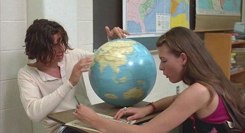
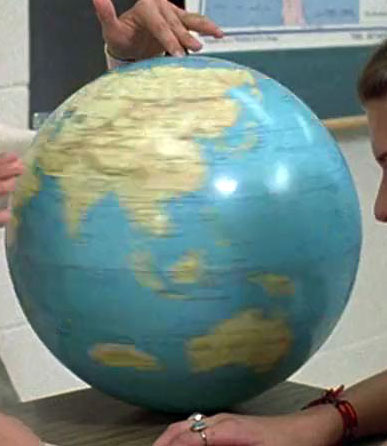
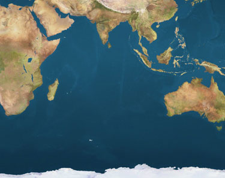

Many people remember islands, land masses, and countries in alternate locations. Some of those memories are startlingly similar.
Many people remember islands, land masses, and countries in alternate locations. Some of those memories are startlingly similar.
I discussed this in two previous articles. The first was about Sri Lanka’s location, since that had attracted considerable comment.
The other article was about checking older maps, in case newer maps have been altered for political reasons. I showed the process I’d used to clarify Sri Lanka’s location, then and now.
However, specific countries and land masses seem to recur in our discussions. I’m moving those comments to this newer post, so they’re all in one location. (No pun intended.)
Many of the “altered” locations are around the Indian Ocean, but some are not. New Zealand and land masses around Korea have been the most surprising (and consistent), so far.
So far, the major location discrepancies seem to relate to:
- Andorra
- Cuba
- Denmark & Sweden – islands nearby
- Korea
- Japan
- Mongolia
- New Zealand
- Oceania (in general)
- Poland
- Portugal
- Sri Lanka (at its own article)
And then there are odd media references, such as the globe in the movie, Dazed and Confused. Are they pranks, Easter eggs, or the kinds of references that document a dramatically changing global landscape?
Courtesy of http://imgur.com/P6YhV5W:

Close-up:

Compare that with this satellite image:

Share your thoughts and insights, below.
(Note: Some comments were originally at the Major Memories page, and moved here so they’re easier to follow.)
A person I’ve met who remembered New Zealand being North East of Australia drew this:
http://i.imgur.com/Mp2Dipz.png
Does this match how anyone here remembers it?
That map matches the location that I recall. I’d thought NZ was mostly one land mass and a smaller secondary island, but the location is an exact match for my memories. The proportions (distance from Australia, and relative position) fit my memories, precisely.
And, really, I was mostly interested in where it was located, when I looked it up on the map, years ago. At the time, one of my closest friends had moved to the US from NZ, and I’d wanted to see where her homeland was. So, it wasn’t an in-depth geography study, just enough to say, “Okay, NZ is northeast of Australia. Got it.”
For me, NZ was northwest of Australia, and Australia was quite a ways further out in the middle of the Pacific.
I’ve always been fascinated by the 4th dimension, since early childhood. I stumbled upon this site yesterday when researching timeslips like the ones that have occurred in Liverpool, England (interesting Google search for those who don’t know). These comments have no less than fascinated me. I’ve been reading for well over 6 hours and I’m only to this point so far. I’ve read every comment with care. Never have I been so interested in a single article. The nearly unanimous agreement between so many posters is something I’ve never came across in this wide web of our world. It seems there is definitely something that happened which is collectively remembered. Since timeline slips normally seem to be personal experiences, I wonder if this particular event was some kind of psy-op? There are not so many posts of the other events, so there is a factor of possible mis-memory, but the Mandela funeral, there’s just too many people who remember it. I wonder if there are experiments of implanting memories into people happening? When something is a memory it’s impossible to tell whether it was implanted or “real.” I’m 99.9% certain the parallel universe theory is correct(ie: all possible arrangements of particles exist at all times, and we see whatever results from that arrangement), but something is strange about this Mandela effect. My #1 theory is perhaps there was a TV broadcast to certain geographical areas as a sort of propaganda psy-op type of thing. Theory #2 would be an experiment with mass implanted memories via some means, perhaps wireless. Theory #3 would be a timeline slip with mass numbers involved. I’ve had items that I know existed disappear from right next to me, most recently a few days ago, so I know we live in a very exotic reality. I was originally posting to say this about NZ lol, but off I went, like I said the topic fascinates me: I too remember NZ being more Northern, but I’m wondering if this is from the effect of modelling a three dimensional sphere on a two dimensional plane(one of the few impossibilities in our reality, lol!). Some paper maps are stretched out in different manners which change the geography and this effect is magnified in the polar regions.
I remember that huge territory at Australia’s left.
That is where I learned it to be . I was surprised at it’s (actual) location when I looked it up.
I specifically remember New Zealand at the North East of Australia as well, i was just shocked when i looked at google maps :0
I had the same experience some time ago, I was so convinced New Zealand was North East of Australia. Then today I found this site and read about the perceived misplacement of New Zealand, but having completely forgotten that episode I thought to myself, “no sir, New Zealand is where it’s always been, to the North East of…” Then I checked the map and was surprised again! Weird stuff.
In my memory, Australia was also much further south of Indonesia and the other islands! Not close at all, and I was very convinced of this as well.
Sandra, you’ve nailed it from my point of view, too! Like you, when I read about New Zealand, I raced for a map saying, “no sir, New Zealand is where it’s always been, to the North East of…” But no, the map now has it being SOUTH East? This can’t be. And like you, I remember Australia being much farther south of Indonesia.
One thing I don’t understand about these memories of New Zealand being NE and Australia being further South, is whether folks were aware of them climatically in their memories. What I mean, is that I have always been aware that Northern Australia is tropical and that most of the country is at least sub-tropical (as in beaches, generally warm weather, etc.). I have also always been aware that New Zealand was not this way (glaciers, snow, etc.). Australia being further South, or New Zealand being further North, directly conflicts with the climates I have always known them to have.
Caelum, I can’t speak for everyone, but I have never been to NZ or anywhere near it. So, for me — and probably most visitors to this site — the New Zealand memory is related to a map or world globe. I haven’t a clue about the relative climates (except for scenes in Young Einstein, not the most credible of sources) and landscapes. For me, it’s about the location on a map.
It’s WAY too far out in the ocean. I don’t recall that there was such a huge body of water between it and Australia. And it was farther north, closer to the top of Australia. Also, Australia itself was bigger, and more “down under” than it is now. When I look at maps, I see that the southern tip of South America is actually further south than Australia, and that doesn’t seem right to me. Was New Zealand always broken into two islands?
Anyone here aware of the change to Russia? Apparently it gain territory between Lithuania and Poland and it did not have prior to me finding out about the Mandela Effect last month. http://www.worldatlas.com/webimage/countrys/eu.htm It’s the unmarked area West of Lithuania and Northeast of Poland. If it’s not a part of Russia, what country is it and when did it appear?
I also noticed the new & weird little piece of Russia on a different map while I was checking out other anomalies. Wasn’t sure if it was just me, but I guess it’s not!
For the record, and in the correct section, these are the geographic changes I’ve noticed…and I am a huge geography & cartography fan as well as many others who have noticed these changes:
-Australia is the biggest one for me and freaked me out. The spike-wrong! Also, it was way more isolated & closer to New Zealand. If Australia moved southeast by quite a lot, in order to get more in line vertically with NZ, that is how I remember it. NZ seems to far south & east, but Australia moving back would seem to correct it.
-Alaska! The three peninsulas & the accompanying bays seem very wrong. If you were to fill in those bays almost flush with the rest of the coast, that fits with what I remember. I used to work for a wildlife photographer who specialized in Alaska, and not only does it look wrong w/ the two bays (Norton Sound & Kotzebue Sound), I also don’t recognize the majority of the town and city names anymore. Like Nome & Kotzebue.
-Madagascar. I remember it further south, like east of South Africa. Also I remember it being mostly uninhabited & protected. I remember a friend or my ex in maybe 2005 going there with Peace Corps or a similar group & being so excited because it was rare to be able to visit at all.
-Sri Lanka. Directly south of India and more triangular in my mind.
-Cuba looks huge & weird to me
I thought I had Honduras wrong, but realized I may have been thinking of Hispaniola (Haiti+Dominican Republic).
That’s all I can think of for now!
I sometimes wonder if some of these weird changes we are seeing in coastlines etc. are effects of global warming (rising seas, ice shelves calving) that have not been made public yet. Also many of these areas seem to be seismically unstable OR have been subjected to nuclear testing.
Interesting….
~S
–
South America is way too far to the east. I remember it being more in an almost vertical line, up and down, with North America. The Bahamas also seem to be closer to Florida than they should be. I thought the islands was further out into the ocean. Also, I remember the ocean to the south being called the Antarctic Ocean. Now it’s called the Southern Ocean. I also remember Australia being further south from Indonesia and New Zealand being northeast. Those changes and the differences in words for movies and books are really freaking me out. I don’t know what’s happening. It’s really scary.
The Southern Ocean, sometimes known as Antarctic Ocean, actually is a fairly recent change by geographers, 2002, and it’s apparently not fully official to everyone yet.. It used to have no separate name, the Atlantic, Pacific and Indian Ocean’s all just went all the way down to the coast of Antarctica.
But I totally do remember Madagascar being different, and New Zealand being northeast of Australia, which I do believe was much further south. And the sun was also yellower and less harsh which is why we drew it with yellow crayon in kindergarten/very early grades.
Possibly related to Mandela Effect…. Homer’s description of “the wine dark sea”? There’s a theory that people didn’t see blue as a color until recent centuries, and that not all cultures see 7 colors (or at least not the same 7 colors) in the rainbow.
I do believe US Thanksgiving was on the Third Thursday
I remember a 90’s episode of Friends where Chandler references the BerenstEin Bears which he pronounced BerenSTEEN not BerenSTAIN.
I do not clearly recall news of Mandela’s death or any rioting, but I have vague memories of Winnie referred to as “his widow” in the ninties, and some behavior of hers being reported as embarassing to the new post Apartheid government. But I also think I recall when he was President in the 90’s. Maybe a case fo dual memory.
I’m pretty certain it was “Mirror Mirror on the wall”. I buy most of the famous misremembered movie quotes, the corrected quotes sound correct when I hear them. “Play it again, Sam” never happened, etc. But my brain refuses to believe it was not “Mirror, mirror”.
It’s the Oblast Kaliningrad. The Soviet Union took this piece of land at the end of WWII.
I remember spotting Russia’s territory in Europe on a map in the late 90s, however I have never seen its existence addressed.
This is so crazy. I was talking to a friend of mine who was going to New Zealand and the fact that it is south of Australia came up somehow. I argued to it to death. I KNEW that New Zealand was north of Australia. I knew it with every fibre of my being. I remember being in the fifth grade. My teacher was a really pretty and nice young woman and I kind of idolized her and so because of that, I remember that grade quite vividly. She was giving us a social studies lesson (here in Canada, social studies is what the geography curriculum falls into for elementary schools) and we were learning about the indigenous people of Australia (as a continent, not country for all of you stereotypical Americans reading this) (and general geographic area surrounding it) and we spoke in depth about New Zealand – my teacher even went into so much detail as to tell us that she had a crush on a player from their rugby team, the New Zealand All Blacks. We were all looking at a map that pulled down from a roll at the top of the whiteboard (we had several different maps that were rolled up on top of the whiteboard that could be pulled down and rolled back up with a quick pull down – I’m sure many people will know the ones I’m describing. Anyways, this particular map was a world map, and on this world map there sat Australia at the tip of my teacher’s wooden pointer… And what land mass sat almost directly above it? None other than the beautiful land mass that we call New Zealand. I can still see it clear as day and I know that it wasn’t just a confusion on my part because I’ve had other memories regarding where New Zealand is (was?) located. So that brings me to finding this little gem of an article. In all of my frustration trying to argue my case and wondering how someone who doesn’t come from the US could be so blatantly ignorant of world geography, I decided to ask professor Google. ‘New Zealand is North of Australia’ is all that I typed into the character field. I pressed the return key and lo’ and behold, this site comes up as the third entry down in the list that Google gave me. I am so weirded out at this point I can’t even explain it. It feels so eerie. I’ve never been so sure in my life! Also, in eighth grade science class I did a project on the Kauri Snail which is indigenous to New Zealand. I’m going to call my parents and grandparents to see if they kept the report (they kept a lot of my school projects) and if I’m lucky and it’s still there, I hope it will prove that something is awry… Unless of course history has been rewritten and my report even shows NZ to be south of Australia as well – twilight zone, here I come! I’m just glad to see that I’m not alone in this experience and that I haven’t just gone crazy or something. Looks like a really interesting site with some pretty cool reads as well. Glad to have found it!
I remember just one year ago New Zealand’s two land masses were connected… And I can prove it. I wrote a scene in my first novel about driving between Christchurch and Wellington. I did the research before writing that…
Funny. As an actual New Zealander, I’ve always had to board a ferry to get between Wellington and Picton.
A friend of mine asked me about the BerenstEin Bears a few days ago (it turned out that he’s an “E”, too). This “A” thing is completely wrong on a purely visceral level (as well as for the usual reasons of knowing how to read by German phonetic rules).
I’ve been reading a ton of this since then — I pulled an all-nighter Tue night, took care of a few other things, and have otherwise been poring over the whole effect.
By way of simile (this one not applying to me, nor have I yet read of it applying to anyone else): it’s like suddenly finding traffic lights inverted (as someone had mentioned about her 3 y/o son’s observation, in some thread), and everyone telling you that you’re just confused, and then running into a speak-easy filled with other people who remember the real traffic lights.
My memory is excellent, but fallible. That being said, I have an exceedingly high IQ, some OCD and Autistic symptoms, etc.. I’ve always simply put down my discrepancies to being merely (though sometimes jarringly inexplicably) extremely poor inaccuracies in my memory. The cognitive dissonance sucks, but I had had to conclude that clearly I was wrong (or reality was crazy…). Having read so much recently, I’ve come to to see that a large number of “wrong” memories show statistically significant near-identity with many of mine (which greatly soothes some nerve-raggedness that I hadn’t even noticed being continuously present until it suddenly disappeared upon seeing all of this [damn, I’d love to compare a checklist of who-has-which “wrong” memories]).
I’ve been sorting out which Mandela Effects apply to me and which don’t (which strikes me as odd that it’s not across the board). New Zealand falls squarely into the wrong-world category for me. Worse yet, it seems that of those who remember N.Z. being elsewhere, the predominant theme is very much west of Australia. Seeing your friend’s NE-of-Oz sketch was a gut-unknotting relief.
Thank you, Gurluas!!!

Side note: not to end this on a pessimistic note, but people can get awfully witch-hunt-ish when they notice others being different. Would it really be all that terribly alarmist to wonder if this mightn’t end up as a pogrom vs. the minority (i.e.: vs. those who have “wrong” memories)?
Yes i remember it as that to the North East of Australia, i remember cause i had a uncle that moved there when i was younger and i still remember it to this day it is in the North East.
Side Note: Im from South Africa and Madagascar is suppose to be to the right of South Africa and Mozambique. In relation to this South Africa is suppose to be slightly father south towards Antartica almost the same length of South America.
But i will stand by this fact that New Nealand as i recall it is just plain wrong where it is now….
When I was younger, I used to look up travel opportunities to Australia (I still have not gone) — I always would look up flights and for some reason, the cheapest route was always through Aukland, New Zealand. Why? Because it was to the north-east of Australia and acted as a great “hub” of sorts for all airlines. I read articles about it being used in WWII has a hub in the Pacific, and even in school learned of the importance New Zealand has played as a sort of “buffer” between Australia and the rest of Asia as a whole.
New Zealand’s defenses were built up to protect Australia against an assault from Japan. As a result, Aukland had a huge former military base turned into a huge commercial airliner hub in the southern Pacific. All Qantas flights to Australia from large distances would typically to to NZ first.
Then… this. Today. NZ is wrong on the map.
None of anything I’ve learned about WWII and the role New Zealand played as a northeastern buffer; none of the history about it being a major travel hub… None of it is true here.
[Edited]
Most people think that about that because they played risk a lot. [Link deleted.]
Mohammad, I don’t usually approve “just confused” or “silly misunderstanding” posts, so I deleted your opening sentence. Also, I don’t approve comments with links to transient image-hosting sites, so I removed the link.
However, I wanted to give you credit for finding a map that supports some people’s memories of New Zealand, relative to Australia.
Personally, I never played Risk and hadn’t seen this map until today. It’s certainly something to think about — in a “chicken or the egg” way — because that game map is very different from what’s on most world maps.
Here’s a more reliable link to a webpage with the Risk game map: https://ninjaguide321.wordpress.com/2014/09/05/the-game-of-risk-life-applications/
That’s still not where I saw New Zealand on the world globe my family owned — and where a family friend (from NZ) indicated that her home was. But, it is interesting, however this fits with the Mandela Effect.
Come to think of it I have very clear memories of Japan being much farther south than it is now. Directly east of China and below the Korean peninsula.
Has anybody else experienced this memory?
Rath, My memories of Japan place is a little farther south than it is on the Google map I just checked. But, for me, it might be either a faulty memory or I was using a defective globe when I first located Japan on the map.
The reason I doubt myself as a good source for this is because “my” Japan was a lot larger than what I’m seeing on the Google map, as well. So, that suggests my childhood maps (or world globe, or whatever) weren’t right.
Or, I suppose that might be yet another “reasonable” explanation for a Mandela moment! *LOL*
Cheerfully, Fiona
Could these perceived differences in location be because of differences in map projections? This would especially hold true for size memories. Depending on which projection is being used and where its focal point is, different areas will look bigger. You simply can’t represent a spherical object on a flat paper without major distortions. I do have vague memories of Sri Lanka being directly below India, though, and not slightly off to the side. I have even looked at some ancient maps from hundreds of years ago, but can’t find Sri Lanka shown like this.
Vivienne, thanks for bringing that up.
While some maps may have confusing distortions, the scope of this issue can’t be explained by one or two maps that use a different focal point. Those particular maps would have to be in such widespread use to explain alternate memories around the world, during different educational eras.
I’m pretty sure we’d be able to find those maps online, or in a standard (albeit old) set of popular geography textbooks.
Cheerfully, Fiona
Different map projections seem like the most reasonable explanation for this particular Mandela Effect phenomenon.
Take a look at this list on wikipedia, or better yet, make a post and see if your readers recognize any of them from their memories.
https://en.wikipedia.org/wiki/List_of_map_projections
ALVB, that’s a good reference, but I’m pretty sure you haven’t read all the relevant comments. (Many are among the “Major Memories” comments.) Map projections don’t explain many — perhaps most — of the reported memories.
I remember Sri Lanka being directly below India too and Japan was way lower to the south east of China and it was a bit bigger and one land mass as I recall. I always wondered why the maps are looking so different. Madagascar was much lower and more east of South Africa. I thought I was just getting old and not remembering stuff at all, but now I see there is something else going on.
I could have sworn that Japan was directly east of China and Taiwan. The Taiwan wikipedia page lists Japan as being to the “east and northeast” of Taiwan. I was set on this being a real change until I ran around to find our Risk board (which I have played extensively). Japan is connected to Kamchatka which could only happen if it were as far north as it is today. Did anybody else play Risk? I don’t think the board has changed, but maybe somebody else remembers this better than I.
Rath – I embarrassed that my memories aren’t as clear as yours one way or another, as I visited Japan for 10 days in 1993, but when I have a vague FEELING that Japan should be closer to China instead of east of the two Koreas, for what it’s worth. My globe looks odd to me there.
Yes, that is exactly how I remember it. From recent memory even, I feel like I am seeing things on the map for the first time. I find Australia’s location particularly rattling, as I recall it being much further south and sort of on its own with New Zealand in the Pacific. The proximity to Indonesia is something I am sure I would have noticed, as I have definitely looked up location and other information about Indonesia in my adult life. A close friend in college had grown up there and I have a distinct memory of looking it up because I was curious (I totally had a crush on this guy, so I feel like I remember this a bit better than I would had he been just a casual friend/acquaintance).
Yes…pretty much exactly. I actually noticed my misconception of this earlier this year, before becoming aware of this effect.
Yes! I specifically remember it being directly east of China but nothing right above it, and china was a lot bigger, but I also remember Korea being south of china, not near the top of it.
I also remember Japan being directly east of China. I remember seeing maps, and seeing something about the first inhabitants of the island coming over from mainland China.
I have clear memories of the Korean peninsula being northwest of china somehow, and also new zealand being nowhere near Australia.
I started looking at a globe. That was a mistake.
Where did Mongolia come from and why is Japan all twisted at the southern end?
Anon, those are good questions!
Hi again, Surely not for the sake of continuity, but very sincerely,after seeing the map,i have to add my bit. I remember the australian continent as a remote place with water all around and nowhere near southeast asia as it presently is,the newzealand too existed on the western front.going by different forums it seems that newzealand exists on all 4 corners. As to sri lanka, i also remember the country being further south, although the eastern orientation was same.
I’ll be honest that I scoffed at your comment, thinking “That’s exactly where Australia is lol.” So I looked it up and now New Guinea is right on the northern border and New Zealand is southeast instead of directly east. This one deeply disturbs me as I was just looking up Australia and New Zealand on Google Earth/maps a couple months ago out of curiosity and me and my girlfriend both wanting to visit. What the hell.
I visited Australia about 10 years ago and New Zealand WAS east. It’s way too far south now. The matrix is breaking. This is too weird.
I remember New Zealand being east of Australia not southeast and I remember Sri Lanka being south of India not southeast, and I remember Japan being east of China further south than it is now. I also clearly remember the space shuttle challenger exploded in 1985 not 1986 because I was in Florida and I watched it happen with my own eyes but I was in West Virginia in 1986 so I couldn’t have seen it in Florida with my own eyes in 1986 because I wasn’t even there. I remember the Berenstein Bears and I remember Billy Graham died but now he is still alive.
I’m from New Zealand and a lot of people think that it is east not south east as it is often displayed this way on weather reports etc. It is supposed to be just the two countries side by side and not an accurate geographical representation if that makes sense.
Anon and Fiona – What do you remember about Mongolia? My memories in geography can’t be relied upon, unlike with some of the rest of you. But if you had asked me before I looked at my globe, I would have thought Mongolia was just a region and I wouldn’t have been sure whether it was in Russia or China. I would usually hear the term “Upper Mongolia” referenced as one of the coldest places on earth. An about.com article entitled “Is Mongolia part of China?” said that it was only in 2002 that China started thinking of Mongolia as a separate country, even though it originally declared independence in 1911. My globe is a National Geographic globe from 2000. But of course, Nat Geo could have recognized Mongolia as a country before China did. Did you have a memory of it not being separate on current maps?
Julia,
I was taught that Mongolia had a relationship to China similar to what Philippines has with the United States. That is, strong ties but separate countries.
And, because of the extremely rural nature of Mongolia, bordering extremely rural parts of China and Russia, the dividing line was less important than defended borders of more industrialized countries (as of the early 20th century).
So, I never paid much attention to Mongolia when we studied geography in school. I knew where it was (and it still is), but that’s all.
Maybe others will have different memories about this.
Cheerfully,
Fiona
I’m freaked out. I know mongolia was part of China 7 years ago when I learned the world map exactly in High School. Upon looking at it, I’m also shocked at Portugal. That is NOT where it was when I was a teenager. I can’t remember where it was but it definitely wasn’t attached to Spain, I think it may not have even existed.
I am so confused. I also remember New Zealand and Sri Lanka being in slightly different places.
All I remember for certain is that Count Duckula’s castle was once transported to outer Mongolia.
Yes. I recall that episode too.
Now I knew about Mongolia from a young age thanks to Disney’s Mulan movie. I was born in 1993; Mulan was released in 1998. But I could almost guarantee you that I never saw Mongolia on a map until just a few years ago. The entire area of what is known as Mongolia (in this timestream at least) was in China. I assumed China took it over long ago in ancient times and Mongolia was just no longer existent. And that’s what I always believed. So imagine my surprise when just a few years ago I was looking at a globe and I see that Mongolia does in fact still exist. I never really thought much of it till I saw this post but now it has convinced me only that much more.
What? Mongolia isn’t a territory of China?! This is all wrong.
Mongolia was part of the Soviet Union, and thus did not show up as an independent country on most maps until the past 20 years.
Mongolia was never a part of the USSR. It was a communist state, yes (People’s Republic of Mongolia), so a Soviet protectorate in practice, but still an independent sovereign state, recognized as such by everyone after WW2, and joined UN in 1961. So any map you have from the last 60 years should show it as an independent state.
int19h, I appreciate your concise clarifications. Thanks! And, for the purpose of this website, it’s important to remember: Mongolia may never have been part of the USSR in this reality, but our discussions usually focus on alternate realities and alternate histories. So, I like how you said that any map from the last 60 years should show Mongolia as an independent state. What people recall from their alternate memories… that may be different.
Right, I had the impression that Mongolia ceased being a nation hundreds of years ago. I look at Google Maps quite frequently because I have students all over the world, and I want to know where they’re from. A lot of my students come from China and Russia. It feels very strange to think I might have overlooked an entire nation. My impression was that the Mongolian empire fell a little while after Genghis Khan died, and Mongolia was no longer a nation after that. Looking at the flag now, I have absolutely no memory of it.
I don’t see New Zealand.
Mongolia was once a soviet satellite state. On maps prior to the break up of the Soviet Union, it was colored the same as Russia and the other satellite states. It would appear on older maps as if Russia and China shared a border and Mongolia did not exist.
It has been an independent nation since around 1990.
There is also a province of China called Inner Mongolia. It is an autonomous region, meaning it has more legislative rights than a normal province. This may be what is causing some confusion on to the relation of Mongolia to China. Inner Mongolia is a part of China.
Not in this reality it wasn’t. Mongolia, in my childhood, was not part of the Soviet Union and was always it’s own country. It’s a beautiful place where many people still live in a horse based society. It’s like the Old West, but the Old East instead.
http://www.marxists.org/glossary/media/places/u/ussr/1990/political.jpg
The mind boggles!
Mongolia is one of the things that is bothering me the most out of all of these anomalies. I had never seen Mongolia on a map before though I’m pretty sure I’d heard the name, but only a few times including when i learned about it as an ANCIENT TERRITORY/EMPIRE in history class. There is no way I would have missed something that big on a map that I used to stare at every day in homeroom for four years (that was just a couple years ago too), and China and Japan look completely off too (I have no doubt that Japan used to be directly east of China). There’s also Kazakhstan right next to Mongolia, another huge country that I had never seen or heard of. Add to that the fact that I used to look at all of the world flags in the kids almanac when I was younger as well as on the internet later on and had never once seen the Mongolian flag before until I literally just saw it for the first time in my life five minutes ago when I accidentally came across it while researching a different country for a school project. This stuff is seriously freaking me out.
Uhhhh, Mongolia? Did they revolt from china or something? China was roughly round in shape last time I checked a few years ago..
In the film “Dazed and Confused” (1993) at the 15 minute mark a student spins a globe that shows a large landmass off the western coast of Australia.
This does not exist on any of our maps and atlases nowadays.
Here are screenshots of the scene with the globe:
http://i.imgur.com/zcnZGHt.jpg
Good catch and very cool!
WTH is that blob?!?! Seriously!
I bought a copy of the DVD and I’ll be reviewing it in the next couple of days. I’m hoping to sort out whether it’s a real globe — and, if so, if it’s the brand name on the globe — or if it was created as some kind of easter egg.
I’ve reviewed the DVD carefully. The segment is at the 15 minute mark, and the globe spins multiple times.
In favor of it being the logo or compass rose of the map: I don’t see a logo/rose anywhere else on the globe. Most globes have them.
In favor of it being a land mass: No matter how slowly I watch it, the land mass looks irregular. Most logos are either symmetrical or a simple, stylized design that — even blurred — wouldn’t look like that.
However, I can’t rule out the logo possibility. More research is needed, to identify globes available at that time, and if the globe was altered as a kind of “easter egg” in the movie.
Sincerely,
Fiona
Hi Fiona-
My observation, upon review of only the screenshot, is that it could be simply a poorly-cared-for globe with a worn spot in the paint from having been kept consistently in contact with a surface on one side for an extended period of time.
If you observe the blob, it seems to have white edges… if it were a continent, that would make it ice-surrounded, even though it’s at the same latitude as Australia. That does not make sense.
I believe that the white edges are the exposing layers of material involved in making the surface of the globe. Many surfaces with layered construction that show wear over time show similar patterns.
Finally, I’d like to point out that the globe is being held by hand in the picture, which implies that the stand of that particular globe is perpetually absent. In keeping, one would expect that there could be surface damage from extended “setting on a surface” over several years, in lieu of a stand.
As for why ONE spot would wear, my guess is that the globe’s weight balance made that spot the bottom inevitably. Therefore the person who was setting it down would be perpetually propelled to find that specific spot intuitively in order to still the motion of the object upon the surface.
Best regards,
Jacques
Jacques, that’s as good a reasonable guess as any. It requires a lot of suppositions. I’m more comfortable thinking it’s an “easter egg” in the movie (or a simple prank).
However, yes, it could be a wear spot if we assume the paint undercoats include the same tan shade as the land masses. With screen printing, that’s possible. However, that also assumes two layers of paint underneath the blue color of the ocean: the white and tan colors we see. Otherwise, we’d see metal… assuming it’s a metal globe, which I think is reasonable.
To test this theory, I’d look for a world globe of similar vintage, and lightly sand it to see what layers (and colors) are underneath the blue.
Sincerely,
Fiona
My theory: The production company didn’t pay for the rights to show whatever company logo was on the globe, so it was obscured by the props department. One way to do this would be to rub off the logo with a file, removing the surface paint layer and exposing the cardboard beneath.
DG, the sanding issue has been raised before, and it’s one we still need to explore with an actual, similar globe. The deciding factor is likely to be the colors of the underpainting and primer. However, I think it’s probably a metal globe, not a cardboard one. As a props handler, I wouldn’t try sanding anything cardboard to start with, unless I wanted really severe aging effects on it.
All past globes and maps reflect our current timeline. So it wouldn’t contradict our current “reality” …
Exactly.
that landmass west of Australia I believe is the maker of the globes mark, like the company name and logo
fangerstan, we’ve already discussed that possibility. As shown, it’s not a maker’s mark. We still need to find a metal globe with similar under painting to see if it can be sanded to look like that.
I was thinking about this recently, and if they wanted to obscure the company logo, wouldn’t they simply paint over it with a matching ocean color? This would be easy and quick with a cheap bottle of acrylic paint, and it wouldn’t mess up the globe the way scraping would.
Very good point, Vivienne, and it’s another solid argument against the idea that the globe had been scraped. Thanks!
I believe the landmass is Paupa New Guinea, is it not?
Negative. You can see Papua New Guinea in the picture to the north of Australia, off the cape. The eastern part of that island is PNG.
I believe I remember seeing that landmass on globes like that when I was a kid, in about ’93 when that movie was made, but I couldn’t tell you what that landmass was called. Also in one of my realities Madagascar was landlocked inside Africa and not an island and there was a landmass at the North Pole called simply Arctica.
And new Zealand? It’s not there.
I’ve been recently looking at an Europe map, and two things caught my attention.
1. Poland has seemingly grown, it’s roughly the size of Germany all of a sudden?! Poland used to be a tiny country.
2. I remember reading about the man from Taured, and when doing research about it, Andorra was a region in Spain, now it’s a VERY tiny independent country.
I am a bit unsure about the latter, but Poland was definitely smaller earlier.
I don’t know how far back your memories stretch, but I do know Poland annexed land from Germany after World War II.
It’s possible the prop department needed to cover up the logo for legal purposes and they decided to do so in a humorous way.
starbits, that’s a good point. It hadn’t crossed my mind, but it could be the explanation.
Poland was never a tiny country. In 1650 – 990 000 km²; in 1918 – 380 000 km². In 1945 Stalin & Churchill parted old territory – eastern half was taken by USSR. And eastern part of old Germany went to Poland.Now it has 312 685 km2 so above 67 000 km2 was lost after WW2.
I also have the memory of New Zealand being northeast of Australia. I asked my husband, “Where is New Zealand?” and he said, “Northeast of Australia.”
I’m just glad we’re in the same timeline together
—but NZ is Southeast of Australia!—-???????
This is strange. I always thought that New Zealand was northeast of Australia, too. I asked my husband and he thought it was on the east side, but was not sure if north or south. Very interesting.
I always loved the movie Ben- Hur with Charlton Heston. I remember watching it pretty much every time it was on tv. One particular scene I recall vividly is where Judah Ben Hur has just rescued the centurion on the ship and they are floating on a piece of debris. Charlton Heston is standing tall, holding on to a chain and talking to the centurion. He was half naked and totally sexy. However, I have watched the movie later and that scene was not there. Has anyone else experienced this?
http://ecx.images-amazon.com/images/I/51Wrka6SwvL.jpg
Have you guys seen this?
A Mystery Island West of Australia.
http://www.reddit.com/r/Glitch_in_the_Matrix/comments/1raphw/geography_glitch_in_a_movie/
JM,
Actually, we have. It was brought up in an earlier comment, and I’ve reviewed the scene in the DVD. See the article and thread at http://mandelaeffect.com/history-explain-alternate-geographical-memories#comment-1178
This isn’t an alternate memory since, so far, no one has said they remember a huge island country there. The discussions about New Zealand reference a different location.
The Dazed and Confused globe might show a logo. If not, it’s a prank or hoax, something along the lines of an easter egg, or evidence of alternate geography.
Sincerely,
Fiona
Madagascar has shifted way north for me. I remember it being much farther south, and directly east of South Africa.
Cuba is way larger.
The Bahamas are now much closer to Florida.
i remember madascar being more south of africa. i remember too because in my class back in 7th grade, we had to memorize where it was and put it on a map. and i remember it being closer to africa too. now googling a map, i see that its more north and farther away… strange
I grew up in Kenya and Madagascar is in the same location as then. I had a map/puzzle of Africa at the time and I remember wishing it were farther south so it would fit in the puzzle better though, so it’s probably pretty natural to remember it as further south.
Andrew,
I’ll agree that some altered memories might be products of “wishful thinking.” I recall Jimmy Carter’s sister actually teaching workshops on more fully integrating happier, created memories to replace trauma, etc.
However, the geography issues are so real and consistent among those who share specific ones, I’ve spent considerable time looking for older maps with those “misplaced” lands. My altered geography issue is New Zealand. I can recall where I first looked for it, around 1990, when we met a new neighbor from New Zealand and we took out our family’s world globe to find where it was. Later, it was part of a formal geography lesson, and we had printed maps from a textbook.
It’s not like I “wished” New Zealand was somewhere different. I’d have no reason to care, really. But, so far — and I am still looking — I can’t find any maps with New Zealand where I remember them. I do wish we’d kept the world globe we had then, but my memory matches others’ who (in public or via private comments) brought up the topic before I’d mentioned it here.
(See my article about altered geography, http://mandelaeffect.com/history-explain-alternate-geographical-memories , and — if you’d like to continue this discussion — let’s shift it to that thread.)
Cheerfully,
Fiona
Here’s the problem with all of this altered geography stuff, in comparison to something like Berenstain vs. Berenstein. If we’re going with the idea that the cause of this is slipping from dimension to dimension, then all it takes for the name Berenstein to change into Berenstain is for Stan and Jan Berenstain to make a decision to change their names to a more recognizable “Stein” for the purpose of marketing. In one dimension, they did, and in another they didn’t. This doesn’t alter all that much.
On the other hand, islands and continents being in different locations represent a fundamentally different Earth, which would’ve needed to start being different liberally over a billion years ago. FAR far back. Massive geological differences from our current world. A world where NZ is northeast of Australia or where Japan is further south instead of southeast is not one dimension over….not something you can just slide into. It would likely be almost unrecognizable to the point where maybe humans never even came to be.
The CAVEAT is that this is the case if we’re talking about a PURELY PHYSICAL world . I actually subscribe to the idea that we live in a computer program of sorts, and in THAT world, the programmer could, I suppose, decide that Japan needs to be a little further north to serve some sort of outcome the programmer prefers.
What I suspect, however, is that this map stuff is probably more likely the power of suggestion combined with the fact that people in general really don’t know their geography all that much. I’m a big time geography buff (know for it among my friends), and I had the impression until earlier this year, and before learning about the Mandela Effect, that the Korean Peninsula was north of Japan, and not level, but I attribute that to simply misremembering…because I SUSPECT that if I moved a map around to what I thought, it would end up looking very foreign to me.
RyanKW, if — in your holodeck (which may be mine and others’, for all I know) — the “misremembering” answer works, that’s fine. Breaking things into categories that work for you, e.g., spellings are a reality shift but maps are a memory issue, is fine, as well. That’s not the answer for everyone. However, I’d be very interested in what would happen if you shifted a map around to what you thought it should be. (And, if you do, share the graphic in case it matches anyone else’s memory of what the map should look like.)
Ryan KW brings up a point I’ve thought about, also. My understanding of alternate universes is that the more recent the timeline forking, the more identical the worlds. Makes sense – they have more in common. The farther back we fork, the more opportunity for difference. A world where New Zealand was actual NE of Australia might easily have been eventually populated by sentient, bipedal felines who descended from lions. Yet people who remember NZ as NE of Australia are not reporting other, extreme differences in their world view.
I don’t think this is idle speculation. While we don’t need a flawless theory in order to investigate why so many people have similar alternate memories, an issue this large needs attention at some point.
Good point, Carol, but I question “other, extreme differences.” How would you define that?
Many people — including me — tend not to mention other alternate memories until a stranger does. Even in the conversation that sparked this website, I didn’t spontaneously volunteer my alternate memory of Mandela’s earlier death. Shadow mentioned that memory as something others held, so I admitted I harbored that memory, as well.
Perhaps some people who recall NZ in a different location also recall Hy-Brasil actually existing, west of Ireland, or — like me — recall a huge ice cap called Arctica, above Scandinavia, Russia, Alaska, and Greenland. (I’m pretty sure it covered Svalbard/Spitsbergen, and if someone had told me that the main settlement of Svalbard was something called Longyearbyen, I’d have remembered it.) I do recall National Geographic magazine articles and maps, related to explorations of Arctica, and it wasn’t a huge trek north from Alaska. (I’m fairly certain Alaska was part of the Arctic, but Arctica was considered a different geographical region. Something about the plant life discovered in the ice, but that’s a very vague memory for me. Mostly, I was interested in the colors of ice and icebergs, as related to Hudson River School paintings by artists like Frederic Edwin Church.)
But, even without the Arctica memory, my alternate memory of Mandela’s death (and funeral coverage on TV) — all by itself — seems fairly “extreme.” Ditto the memory of Billy Graham’s funeral that pre-empted regular network TV programming for three days. To me, Sri Lanka looks in an odd position, but I can’t swear that’s moved in contrast with certain memories.
(I’m also being cautious in this conversation, having had to edit or outright delete your other “you’re just confused” comments. This is looking rather troll-ish, but — for now — I’m taking this at face value.)
Having never been to New Zealand or studied it at length, I couldn’t tell you if it has a feline population in this reality or any other. And, giving Neal Adams’ Growing World (Expanding Earth) theory a nod, I don’t think geographic changes need to go back to the initial formation of the planet. I believe the fork would have been more recent than that, but still might go back to prehistory. Or not. I haven’t a clue.
For me, whether it’s a parallel reality or a holodeck… that’s a coin flip, and — at this point — I’m not sure it matters. My initial focus was on whether or not alternate memories were widespread; the Berenstein Bears issue sealed that in a hurry. Now, I’m looking for patterns in memories and the markers that may be related to them.
In this comment, you’ve raised an issue I’d like to expand on in future conversations: I’m interested in other changes, related to a geographical location that seems to have moved: Specifically, if anyone has visited that locale after it seemed to move, and if the move was significant enough to trigger other, huge differences (in landmarks, native species, and so on) contrasting with their earlier experiences/memories.
One other geographical area that seems completely wrong in my memory or timeline is the are known as Gibralter or the Rock of Gibralter which I KNOW was directly south of Spain and north of the African continent and not on hundreds of miles northeast of Spain’s eastern coastline and also not physically attached to Spain mainland. Millions of people especially well educated degreed types and others just can’t be misremembering an event of a physical location with the alternate memory of all these people being very close to the same. Do you know what the mathematical odds are that so many people having a very close or common memory of a place and or event, and yet that event and or physical location can’t be proven to be so in this timeline/reality? A time or reality shift has occurred but the evidence of such things ( as I understand them) is we’ll see much of the world the same as before but with changes in history, people, events and geography.
My biggest mind blower is the never before seen videos (for me) and interveiws of some of my favorite musical bands. Songs they played that I never heard of, interviews given I never saw before in the 10 or so years that I have followed the latest news on these bands via you tube posting which happen rather quickly these days. Way to many videos I have never ever seen, wearing different clothing, different sets/background, hair style…its really freaky.
Although as I have stated, I’m not a geography expert by any means, that “blob” on the globe in the movie sure looks like it’s supposed to be a land mass to me. Strangely, I thought there WAS something to the west of Australia. I think I mentioned in my long most on the major memories -links that it was only a few weeks ago that I looked at the globe in my computer room – checking for something about Australia or Indonesia when I noticed the placement of New Zealand and had the eeriest feeling that it wasn’t where I thought it should be. My memory is by no means to be relied on in geography – it was just a feeling and it surprised me that I’d even think about it. (This was before I had heard the term “the Mandela effect” or saw this website.) The blob in the “Dazed and Confused” globe is actually where I would have guessed New Zealand was, though that’s a huge blob! And it’s hard to tell, but it looks like New Zealand might be represented on movie globe where it is now. I asked my 79 year old mother where New Zealand was in relation to Australia. She thought for a moment and then guessed “west” – for whatever that’s worth.
My mother was completely sure that Armenia was not a country and hasn’t been for a long time. She was convinced that it was part of Turkey, and has been for decades. She has no recollection of it as part of the U.S.S.R
I actually remember New Zealand being *part* of the continent of Australia, on the east side of it.
I can swear I’ve seen this map also.
Maybe in an old text book or daily journal / agenda (where we would write homework down). There was always multiplication tables, maps etc. in the front and back few pages.
Ever since I’ve come across this subject, New Zealand being roughly 1 third of the continent or Australia on the eastern side. I cant get it out of my head.
I’m going to dig through my possessions, I’m a bit of a pack rat.. I have a feeling it is probably gone as I have moved a few years back and previous attempts at finding old possessions were un-fruitful.
I’m 25 for reference and I believe this dates back to late 90s early 2000s.
Exactly what you are saying above, about 1/3 of the continent on the eastern side!
I was born in 1983 and I’m in Australia, Sydney to be exact and I’ve got an atlas made by jacaranda atlas programme showing NZ southeast of Australia with the tip of its north island sitting roughly in line with Sydney and all of the island groups of the Pacific in grate detail. If there’s a way I can upload the pictures as it’s an A3 text book. It also shows Mongolia independent from the ussr and China with Japan sitting east of the United land mass of North and south Korea. Let’s just say it’s so old it still has Burma and no Sri Lanka. It also shows Jakarta way west of Darwin bit in line. Poland comes up as south of Sweden. And Portugal is attached to Spain. I recall America having 52 states. And I recall castro dying a few years back and his brother officially taking over. I recall the stories of him being a casanova also. And they actually used the term casanova. I remember the berenstein bears not Berenstain. Hmm goes on it does.
I too thought that new zealand was west of Australia
Oh good, I thought I was the only one!! I SWEAR it was west when I was in school. Like, just below Singapore. I was a huge nerd about Where in the World is Carmen Sandiego?, the computer game AND the tv game show. Every day after school I’d grab encyclopedias off the shelf and study the continents to brush up before that last round of the show where they had to put the markers on the right state/country. I was AWESOME at it. And I can clearly remember New Zealand being in the Indian Ocean.
Part of my brain has been accepting that it’s east for a couple years now, as I have online friends from NZ and they often refer to it as Tomorrowland, due to its proximity to the International Date Line. So, I know where it is, but I KNOW it was west before!
I’m the guy who originally took those Dazed and Confused Screenshots, but I am not the one who discovered it, someone found it way back in 2009.
My thread: http://www.davidicke.com/forum/showthread.php?t=254480
His Thread from 2009: http://www.davidicke.com/forum/showthread.php?t=94386
His thread still fascinates me all these years later.
Some one should get a high quality blu-ray screen cap. It’s the only way to see what that Island really is.
What i remember studying in school is that australian continent consisted of 2 countries australia and newzealand and was located in middle of south pacific.Now that the erstwhile continent has moved towards asia and infact has indian ocean on its western flank,its but natural that newzealand has to shift from west of australia to the east.Some remember newzealand at north west of australia which in present scheme of things would mean newzealand being intrinsic part of southeast asia,bang in the gap between indonesia and singapore,a very absurd notion indeed.The present newzealand doesn’t belong to any continent,submerged continent zealandia is cited and so is ‘oceania’ region.I don’t remember anything like zealandia or oceania.
That globe should never have been in contention,its like being in a rut or worse, acting out the stories of enid blyton,figuring out mysteries in a most story like manner.Mandela effect deserves better references than prospecting for gold or a goldmine with a childish doodlebug.I don’t like to sound unsympathetic but such things make the subject look like a plot for soap opera that no soap manufacturer would care to sponsor.Alternate or false memories are an intrigue and many references that can enrich the subject can be sourced from the writings of prodigal authors of 20th century,and i have learned that the thriller genre is a very rich source of the contemplation of human enigmas.
Vivek,
I’m not sure why you’d say that. We have stories that suggest New Zealand in an alternate location relative to Australia. A movie shows a globe with an unidentified, large land mass. It could fit the alternate memories of those who recall New Zealand at or near that location.
Why wouldn’t we want to know the validity of that prop?
Relative to the New Zealand discussion, the globe in Dazed & Confused has no less value than the maps we’re studying in connection with Sri Lanka’s alternate locations.
The image on that globe might have been an intentional Easter egg, just for fun. As recently suggested, it might have been placed to conceal branding.
Or, it could explain the prevalence of alternate New Zealand memories.
For all we know, a globe was manufactured with a glaring error, and that mistake misled many students (including me) before the related globes were recalled. (I don’t recall New Zealand that large or in that location, but others might. I’m allowing for infinite possibilities.)
Our research should include:
1. Whether that was a real globe or an altered prop.
2. If it was a real globe, what the unidentified land mass is.
3. If that was a land mass represented on a real (unaltered) globe, whether it was a mistaken printing.
4. If it was a deliberate representation of an actual land mass on an unaltered, manufactured globe, do other maps from that era — no matter how obscure — also feature that same land mass.
As far as I’m concerned, dismissing the globe without examination would be a disservice to the Mandela Effect community.
I’m not quite ready to give the New Zealand topic its own post at this website, but it’s probably going to occur in the near future.
Sincerely,
Fiona Broome
New Zealand consists of two Islands (North and South), I don’t know of this debunks the idea or if people remember it as a solid mass to the West.
I don’t see New Zealand to the South East of Australia in this clip, https://www.youtube.com/watch?v=aF3BXL1cQYY. So I think you would have to dismiss the assumption that the land mass to the west is a makers mark that was scratched off. I would agree that it would be a possible explanation if New Zealand was on the globe where it is now in this “reality” but as far as I can see it isn’t. Which leaves, either it’s an easter egg, mandela effect or something I can’t think of.
But fiona, You are missing the whole point,i was one of the earliest to say that newzealand existed on western side(sep 28 major memories).The crux of the matter is not the relative position of newzealand vs australia,but the larger picture of australia’s location in the pacific,newzealand simply tugs along westernly in the altered geography of parent Australia.
Vivek,
At this website, the sequence usually is:
1. Someone notes an apparent timeline anomaly.
2. Others contribute their opinions, related memories, and related alternate memories.
3. We check possible normal explanations.
4. We note those that seem reasonable. If nothing fully explains the most significant memories, we continue to gather data.
5. If no answer is found, the topic becomes potential evidence for the Mandela Effect.
In this case, we’ve been through steps 1 and 2: You and others noted New Zealand in alternate locations.
Now, we’re at step 3: We’re looking for normal explanations for some or all of those memories.
A widely-distributed (but faulty) globe could have influenced geography studies, both formal and informal.
We have possible evidence of a faulty globe.
Now, the questions are: Was that an actual globe that might have been in distribution to schools and homes, or was it an altered prop for the movie? If it’s a real globe, does the land mass on that globe fit any alternate memories for New Zealand? If that globe was real, could it explain some of the reported memories?
I’m not ready to assume that Australia is always a parent of New Zealand, in alternate realities. The reports have largely focused on New Zealand, not Australia’s position in the Pacific.
The two may be related, or they may be distinctly different topics.
In general, I first study what’s reported, with some consideration for relational issues.
In the case of alternate geography, Expanding Earth theories might apply. But, before we go down that path, it’s smart to see if erroneous maps could explain alternate memories regarding New Zealand’s location, including Australia as a reference point. (That’s similar to my research into past maps showing Sri Lanka.)
A simple (but widespread) educational error must be eliminated before making the leap to other theories, including Mandela Effect.
Sincerely,
Fiona Broome
Alright now I’m really freaked out not only is Sri Lanka not where I remember it being, the island nation
of Cuba is now at least twice as large as I remember it being and way closer to the Yucatan
peninsula . It dominates the Caribbean Islands now. Some people will say it has to do with map projections
of differing sorts, but as a child I was often absorbed in maps and had / have a fairly good memory
of where everything was relative to every thing else . I think that a conspiracy of cartographers
highly unlikely ,given that transoceanic commerce depended on accurate sizes and positions
for the safe transport of the spoils of empires.
On a different note for the people who find all this bewildering check out the youtube of
Super string theorists James Gates and Neil deGrasse Tyson talking about whether
we could be living in a simulated reality. There is a short version of about 6 minutes
that encapsulates his ideas.
Are you sure you’re not confusing memories of Cuba with Puerto Rico? Not making an accusation…Just going down the checklist.
And yes, as I mentioned in my comment above, the only way that an island or continent could be in a different location without the entire planet being pretty much completely different is in the case that this is a programmable simulation. A physical Earth where NZ was west of Australia instead of east would look NOTHING like our current world. It would require the continental shelves to be fundamentally different from what they are.
RyanKW, I’m assuming you’re familiar with Expanding Earth Theory. In a different reality, if the expansion weren’t consistent, that could produce myriad alternatives to the current timestream’s geography. Very fun topic, and — in some ways — a good match for Mandela Effect.
Good points Fiona.
What is strange about the globe scene is that the globe is centered to the viewer and is spun right in front of us, so it is something that we are meant to see. Until someone gets a higher quality screenshot we will have to speculate.
It would be worth looking at the other maps and atlases in the classroom scenes to see if their logos are also ‘covered up’, or logos on any other props for that matter.
JM,
Those are excellent points. I’ll go through my movie collection and see what other classroom scenes I might have, or anything showing a globe. I’ll look for really old Disney shows, as well, because I’m pretty sure they sometimes opened with a globe, and someone spinning it enough to find the country to point ot.
Mostly, I’m looking in the same era as Dazed & Confused was filmed — and in that movie, itself — to see how often they covered branding. And, I may see if I can find the prop manager for that film, to ask about the globe. I’m still inclined to think it’s kind of an Easter egg, but on the chance that it’s a real, unaltered globe, I want to know more.
(I have checked Easter egg sites and a list of errors in the movie, and — so far — no mention of the globe.)
Cheerfully,
Fiona
It’s also interesting that they are discussing Gilligan’s Island in class and the bathroom before the globe scene. Theme of a fictional island.
I study movie synchronicities. Another one to look at is Sliding Doors (1998)
In the scene where she shifts realities you see a train numbered 777.
http://i.imgur.com/WZBSP5i.png
clip: http://www.youtube.com/watch?v=QsQuNu4NBmQ
777 refers to the Thelemic Tree of life, the ‘lightning flash of creation: http://i.imgur.com/qyYmdp8.jpg
And, lets not forget about “Lost”, which involves a hidden island near Australia that moves.
Hi fiona, sorry if i’ve made some unsavoury and uncalled for comments,but you’ll to agree they were somewhat witty.Coming to the topic,i have to say that i have a tendency to take a bird’s eye view whenever things get murky.What i have deduced is that geographical memories are not experienced by those living in close vicinity of the contentious location and that a distance of at least 1000 miles is generally necessary,in this enigma of oceania region the effect should start to occur from india china onwards.Also the alive again phenomena is almost entirely U.S centric,even if mandela or goodall or tankman or gaddafi were not american, they had aroused familiarity with americans.About 20 yrs back i had done a similar study of rebirth cases of india and found that almost all the cases occured within 5o to 100 miles.
Either the matrix has decided to drop its subtlety or has become nonchalant towards its enigmas or better still apathy is overwhelming mankind as well as the matrix.Technology has certainly become awe inspiring and many people are more amazed at skype call than britain shifting to south west of spain
It hasn’t moved for me.
Not for me either,not in this timeline.we used to say in the womb of future but in this multiverse concept we can do away with this word ‘time’, Taggart proved the unreality of time a century back.Even entropy can do without the arrow of time in this changed scenario,the cup that broke to pieces irrevocably can now be put together with the help of 3d printer,times have changed and the word ‘time’ has become a metaphor.So i should say britain has shifted in another reality,again if there is such a thing as reality.
Hi fiona, This may or may not be relevant but the whole of oceania region from johnston atoll to australia,has been the most abused region for wmd testing of all sorts;nuclear,chemical,biological,by all the western super powers,britain france us,the longitude of johnston lies similar to australia’s at 139 degrees,the tests were carried out for about 50 yrs from 1946 to 1996.Being the largest testing ground of deadliest assortment of materials,the contamination of waters was obvious,could be australia was shifted westwards by some means to avert mass destruction,could be there is something to this, timeline shift starting from 1995.
Vivek, that’s a fascinating concept! This is definitely worth further research. Thanks!
Hi fiona, Done some further research as you suggested and collected a truckload of anomalies and enigmas.Australia belongs to the most isolated region of earth,lies between the south indian state of tamilnadu(sri lanka’s neighbor)and south american nation peru.tamilnadu is supposed to be the cradle of civilization and the matrix of all sciences,racially tamilnadu is closest to the australoid race and yet not the aboriginal type infact the dravidian race of tamilnadu doesn’t belong to any known races of earth;negroid or caucasian or mongoloid.Peruvian deserts where nazca lines exist is the most unique place on this planet,windless rainless where 4 inch deep lines have survived since time immemorial,a perfect place to put markers for the visitors from deep space.What i tentatively propose is ETs landed on australia and colonised tamilnadu with their elite and dumped the menials on australia,put the markers on peru.The interesting thing this theory consolidates is that australia has been the dumping ground par exellence.british dumped their outcasts on the island then carried out nuclear tests,U.S and france carried out their own tes of various nefarious weapons on north oceania and yet australia and newzealand are very beautiful places of earth.A perfect plot for b grade soap opera,what do you say?
Vivek, that’s excellent research! This brings many possible explanations to some major issues. Thank you!
‘It’s about the most inaccessible spot you could imagine on the face of the earth’, straight from the horse’s mouth,may be we are not nutters as to the facts.west of perth, the location we were knee deep in, is indeed something to reckon with.Malaysia plane might or might not be involved,but the enigma has unwittingly come into open as to the location.
No to mention, northern Australia is the house of a supposed dimensional portal in the Pine Gap base near Alice Springs. The plot thickens…
Easter island,the navel of the world, at south pacific is the loneliest spot on earth.About 900 massive statues,weighing upto 90 tons and standing from 12 to 32 feet,are a prevailing mystery similar to nazca lines.And i suppose the motive of these statues is same as those of nazca, signal buoys for e.t space ships.
I’m a Dane and I may have noticed a change.
https://upload.wikimedia.org/wikipedia/commons/6/60/Satellite_image_of_Denmark_in_July_2001.jpg
Notice this map.
The island between Fyn, Sjælland and Jylland…I don’t remember it, I never knew it was even there until I saw it today, and being a Dane I’ve seen maps of Denmark MANY times.
The two islands between Sweden and Denmark around northern Jylland…I also don’t remember those.
I recall it just being ocean with very small islands close to the coast.
I’m interested in more comments from people like Gurluas, who are native to the region being discussed. [Edited.]
Indeed. We have reports of geography changing. We have reports of individual buildings moving or transforming, and so on. However, we don’t have many (if any) alternate memories related to both locational (map) changes as well as first-person observations describing before/after changes on the ground.
the weird thing for me is a swear i remember Hollywood being located up north, in Montana. i even remember driving by it when going to Seattle for vacation… what….the….hell
Logan,
I’m completely baffled. Not the Hollywood-in-Montana part, although that’s pretty odd. It’s why you drove through Montana to get to Seattle.
You have a TX IP number, and the shortest route from there takes you through New Mexico, Colorado, and Utah, and then across the corner of Oregon, up to Seattle. To go through Bozeman (MT), you’d add about 150 miles to the trip and go through a lot of less interesting countryside. Well, unless you just love fields of wheat and corn rather than some spectacular mountain views, that is. (Then again, if transmission or general automotive issues vetoed steep mountain roads, maybe the plains route was the safer choice?)
There is no Hollywood, Montana, but I’m sure you already knew that.
If you can share your route, maybe someone else will recognize a similar experience/memory.
Sincerely,
Fiona
For a long time I’ve tried to find someone else with the same experience, Logan. I distinctly remember Hollywood Land being in Montana? Why, because I had driven past it as well. Now it looks like it’s located somewhere else and has dropped the “land” part. This is insane, but that’s not all.
That landmass, Fiona, I remember all too well mainly because back when I was a little kid in ’86 I had loved maps. I really cherished them, I studied them, knew all of the states, (all 52 of them, Cuba and D.C included), and I liked to trace maps of Europe, the U.S, South America and so on. I did trace a world map at some point and tape it to my wall. That landmass was an territory used by the U.S after the Filipino-American war when they had captured the Philippines from the Spanish in a surprise attack, if I remember correctly the U.S captured the northern portion, but the southern portion’s capture was delayed due to the rebellion due to the U.S not granting the Philippines independence. When the war ended in 1907 the island was taken over completely by the U.S, and was not considered apart of Australia or the Philippines. My last memory of it being there was probably around ’89 or ’90, because I had learned about it in school, it became a territory of Australia in the ’62 and many Americans and Aussie’s lived there. It wasn’t a continent, just a territory. I’ve never watched this Confused and Dazzled movie that is being referred to either which creeps me out a bit.
I’ll be heading to my mom’s house next week to take care of her Yorkie while she go’s out for a bit, if I find it I’ll be sure to take a scan and put it up here. If it doesn’t have the landmass on it… then I don’t know what to say because I’d be petrified at that point.
Great posts, Fiona and Logan!
The new search area for the Malaysia plane is right where that Dazed and Confused mystery Island is. Directly west of Perth.
Very cool, JM! I’ve been tracking the search in relation to the “vile vortex” (or “devil’s triangle”) near that location, as well.
The whole world is now focused on the spot of that mystery Island.
Reality is bending more and more.
Regarding the globe scene in “Dazed and Confused”, I noticed a few more anomalies in addition to the mystery island west off Australia. I looked frame by frame, with brightness enhancement/contrast setting and I saw that:
1- Florida peninsula is gone;
2- Panama channel is open;
3- New Zealand is gone;
4- Madagascar shape seems to be different;
5- China “border” seems to extend farther to the north and Mongolia doesn’t exists anymore;
6- And of course, the Mystery Island near a vile vortex and right into the search area for flight MH370.
Indeed, the globe is too blurry and it could be hard to look for more details. I recall some comments here suggesting that New Zealand may have other locations and in another comment, someone was baffled by the existence of a country called Mongolia. So, maybe this globe refers to a “real” common timeline existing somewhere and from which many people recall as well. I love to think that movies may have some hints on hidden truths.
Good Post MissLyly
What’s interesting is the guy who originally discovered the Mystery Island claims that he had a motorcycle accident back in 2007, and then started noticing small changes in reality. State flags changing, he doesn’t remember the Ohio state flag as a pennant for example.
I take a positive view on these reality shifts though, if you listen to Bashar (channeled info) it all starts to makes sense, we are constantly shifting and we are in an acceleration. He says that synchronicities and miracles will soon become the order of the day. You just have to drop the baggage that doesn’t belong to you. Lighten up to get enlightened, and ultimately be more and more of your true self. The more you do all this with a playful nature, the easier it is.
JM, That’s fascinating! Also, thanks for the positive message, too. It can be easy to feel overwhelmed or even distraught by things changing unexpectedly. Seeing it through a playful filter makes all the difference in the world! (So to speak.)
Cheerfully, Fiona
Fiona, Another gem from victoria,on early hours of 8th august ’93 Mrs. Kelly cahill and her husband while driving thru foot hills of dandenongs victoria australia,saw a big ufo land in a paddock facing them and kelly observed beings inside.What makes this case special is that two other cars were behind them and they also confirmed kelly’s account.The incidence was verified by prestigious researchers.
It’s literaly skeletons in the cupboard called ‘melbourne’.In april 6 1966 near a school in westall melbourne victoria,2 ufos landed and were witnessed by children(it’s in ats today),picnic at hanging rock was written soon afterwards,kelly cahill came many yrs later.What is noteworthy is that victoria lies on southern tip of pacific front of australia the remotest possible location in current dispensation of australia,ufos land on paddock so cattle mutilation and crop circle are alluded.whether the skeletons are real or man made, the cupboard of melbourne victoria is full of them.
Look at that bizarre shape of New Zealand and Australia in the Universal’s opening theme from the movie “The Dark Crystal” (1982). I really got chills…
Link:
http://www.youtube.com/watch?v=YqwW8Y5AX9M
New Zealand looks to be closer and has a weird shape; Australia lost its Gulf of Carpentaria and got a new one in the north west. I don’t think it has something to do with geographic knowledge of that time, because my grandfather has a 1973 globe and all look the same as in Google Earth.
I remember Cuba being located differently in the ocean. (I can try to arrange the current map in Photoshop to match how I always remember seeing it). Basically, it was further South and East than it is now on the maps. It was never as scrunched up, almost in the Gulf of Mexico like it is portrayed now. I am positive I saw it differently on maps until a few years ago.
You’ve got to be careful when dealing with old maps though. Anything pre-19th century must be taken with a grain of salt. For example, try to look for Japan. On a lot of maps it doesn’t even exist and when it does it looks nothing like the real thing. Cartography can be pretty difficult when all you have are ships.
Those two movie sequences though, wow. I remember Australia etc the way it is now but still… wow.
Good point, Dakota! Mostly, I use old maps to try and figure out where some of these mismatched ideas come from. I keep looking for old maps that might have been in someone’s home (or an old schoolbook) and mistakenly used as a reference. (My first tack when dealing with something that might just be a confusion, is to see if I can find where it came from. Something logical that explains it.)
It’s funny that you mention Japan because it is located due east of China and south of Korean peninsula on that globe. I didn’t notice it first but I double checked and bam! It puzzled me.
Take a look:
[link]
MissLyly, at the moment, that link looks like leads to the full length (bootleg?) copy of the Dark Crystal. Repost your link with a note about where the scene is (the time stamp) that shows the map, so people can fast-forward and freeze the screen. Thanks.
It’s right at the beginning, the Universal Pictures globe, 0:05 – 0:15 seconds mark. My apologies for all confusion. I watched it in HD, took a screenshot and I enhanced brightness and contrast.
http://www.youtube.com/watch?v=YqwW8Y5AX9M
5 – 15 seconds mark.
Thanks for the extra info!
I just used the link you posted that leads to the Dark Crystal movie on Youube and youtube says the movie has been taken down due to copyright laws.
Thanks for the update. Also, if anyone has an alternate link that’s from the owners of rights to the film, share it.
So, im now noticing several differences in what i remember of the world map and where things are now on world maps.
Japan seems to have moved further north… twice.. in relation to china and the koreas. In addition to Sri Lanka changing, the maldives were further sw, like halfway to africa. And Madagascar was further south.
The Philipines were east northeast of the current position. Australia and new zealand were closer. India was larger.
I remember looking up Madagascar after the cartoon came out and it was definitely farther south, smaller and shaped differently.
Since more people are noticing the geographical changes, I’ll chime in with this….Taiwan is now no longer within the mainland of China, it is now an island off the coast of China. I always knew Taiwan was part of China and was within it’s mainland but a separate country…now it is not. And yes after further inspection of Southeast Asia and Australia, the entire area looks a whole lot different than I remember when I was in school.
Another thing I have noticed is that some of Islands in the Caribbean now appear to be out of place, and other islands I have never herd of now exist. Trinidad & Tobago is now practically bordering Venezuela so much so it seems to be out of the Caribbean chain of islands( I remember it being further out in the Caribbean, nowhere near as close to South America as it is now) and The Bahamas appear to be too close to Florida. Aside from being a geography lover, I have Caribbean roots, so bad geography is way out of the question with this.
This sounds odd, but I used to look up New Zealand a lot for the purposes of visiting, mostly because I am a fan of Lord of the Rings. I’ve noticed some people on here also remember it not being where it is today, but for some reason I remember it being North-West relative to Australia. I can visually see the image ingrained into my mind, and if I hadn’t checked myself on Google, I would have called bullshit if someone told me it wasn’t. I’m very confused…
Jennifer – I remember New Zealand being west as well but I couldn’t tell you if I remember it more north or south for sure. I have a globe in my computer room and at one time I was looking at that area of the world and thought about how I don’t often THINK about New Zealand and that that it seems even more “exotic” than Australia, and I reasoned that it seemed more exotic because it was even further away from home (California) than Australia. In other words, it was even farther west. Then one day, I think last December, shortly before reading than anyone else remembered it differently, looking at my globe again and looking at the south Pacific and saying, “WHAT? This doesn’t look right”, and eventually realizing New Zealand looked “off.” It’s very freaky, much more freaky than remembering an alive celebrity’s funeral (i.e. Billy Graham.)
I always thought that Australia was in the middle of the South Pacific Ocean. Like somewhere in between South East Asia and South America.
Well, until about a few years ago when I was goofing on Google maps looking at foreign countries, I was quite shocked to find out it’s actually near to SEA. Hmms.
Was watching. Espn and for the first time in my life I heard Talladega was in Alabama. Now I’ve always known Talladega to be in Florida. And I was very sure about this.
Whoa.
I was born in Florida. I *know* Talladega is in Florida. I used to watch auto racing with my dad and him saying he wished he had gone to see the race when we still lived in Florida (I grew up in another state), and when that movie Talladega Nights came out I had that moment of “my birth state” recognition.
I just Googled, and looked at a map, and Talladega is in the middle of Alabama?!?
I had to look that up too. I live in Florida for awhile. It was in Florida. My kids were into racing for some time and wanted to go to Florida to see Telladega. It’s weird seeing it in Alabama.
I also noticed St Petersburg, Fl has moved from being next to the ocean to being next to the Gluf of Mexico. And my childhood town of Wintergreen, FL is just gone.
pretty sure both Florida and Alabama have towns named Telladega if someone wants to check
Talladega = https://www.google.com/search?q=talladega (only Alabama)
Telladega = https://www.google.com/search?q=telladega (redirects to Talladega spelling)
When taking a serious view of the world map now many places appear to be out of place so to speak and it’s noticeable on all continents. For instance in Africa, Angola is now in SW Africa while I remember it being situated moreso in Central Africa. Taiwan is now a small island off the coast of China, while I remember it as a small country in the NE region of China. Anyone else remember Taiwan being inside of China? And now, and this is really interesting, The Bering Land Bridge, that most of us learned about in History Class, seems to have never been totally submerged, because it looks as though Siberia/Russia and Alaska are practically touching once again. Here is a map showing what that area looks like now; http://www.mapsdownunder.com.au/mapshop/images/items/zemwor01La.jpg
Here is a map showing how I remember it in school. Interesting it’s still up, because none of the rest look like this now.
http://www.theodora.com/maps/new8/australia_centered_world_5.gif
Also many parts of Europe seem out of place, for me Germany specifically. And I never heard of Andorra being a country until recently. With others it’s more of a something just seems off feeling.
I saw someone mention Bashar and I totally agree we’ve accelerated and are shifting in and out of different realities every millisecond. I see it as part of our evolution and the evolution of our planet.
Very exciting time to be alive as I see it.
About the Dazed and Confused Globe,
You can see the clip of it here in 720p and judge for yourselves.
https://www.youtube.com/watch?v=aF3BXL1cQYY
New Zealand is completely gone.
Something else interesting, in Linklater’s previous film ‘Slacker’, he does like a 5 minute cameo at the beginning of the film talking about alternate realities and shifting. Then later in the film there is a scene with a guy on the street selling ‘Free Mandela’ t-shirts.
Thanks for the great post Emily,
I also recall the Koreas being exactly where you said, south of China, but north of Vietnam. In the current Guangxi area. This is where I’ve always pictured them. I also remember Taiwan used to be farther south and much smaller. Hong Kong and Taiwan have swapped locations for me.
Also for Fiona, the posts on this site aren’t in date/time order for me, the new ones are at random places. Dunno if it’s the same for you?
JM,
Thanks for the additional info. Very interesting about the Asian references.
Also, thanks for noticing the comments issue. To keep the site running smoothly — despite crazy-busy traffic, some days — I switched to Twenty-Twelve, a fairly “plain vanilla” WordPress theme from WordPress.org itself. So, it shouldn’t have many glitches. (There can be a lag in updates if they’ve rushed a critical security update to WP itself, and then update the themes.)
In this case, I think the problem was the levels of comments I’d selected. I’d gone with the default of five levels. Due to the complexity of our discussions, I’ve increased that to ten. That seems to have relieved the problem. However, I’m sure it’s only a matter of time until I need to look into plugins that will allow even more nested layers.
Meanwhile, thanks for catching that problem. I want people to have a great experience, browsing the diverse comments here.
Cheerfully,
Fiona
I just stumbled over this website and I’m absolutely fascinated.
I’m relatively young (21), but I also talked to my parents, and… yeah.
-I was really surprised about just how close Australia is to South-east Asia. So was my mother. Australia was always surrounded by water (and Tasmania and New Zealand, but not PNG) for me!
-New Zealand seems off to me. Like, it belongs east for me but it was more in the north. Again, my mom agrees.
-I always thought Japan was east of China, but Hokkaido (the most northern island of Japan) is actually pretty close to Russia! (Although that may have been faulty maps/a faulty memory because I also associate Hokkaido with being cold and wintersports – being close to Russia makes sense, there)
-I knew Taiwan was an Island, but I remembered it more southern than it is (Japan was were Taiwan is now). I even held a presentation about Taiwan in school, so I spent a lot of time on it’s Wikipedia article.
-I thought Mongolia was a part of Russia but I’m pretty sure I confused it with Siberia. But it was definitely a part of china? I REMEMBER China being bigger and they had a VERY long shared border with Russia.
-Where did Svalbard come from?
-I was also at some point REALLY surprised by just how big Poland is. For the record, I’m from the middle of Europe. I should KNOW how big it is. But it’s huge!
Also, my mom remembers Billy Graham dying “when she was young”, so a few decades ago. What. (Maybe she confused him with someone…)
In case of Nelson Mandela her answer was “well, maybe it was propaganda”, though.
My history teacher was pretty awful and the US weren’t mentioned much in geography but I remember there being “about” 50 states. Why do I remember “about”? Why not exactly? That’s not a hard number to remember.
My mother’s answer was a guessed 42, but it was obvious she had no clue. My father was VERY certain that there were 49, then they added Hawaii and Alaska so it has to be 51 now. (Then he added that maybe they added another one and it was 52 by now.)
Both my parents were surprised to find out that Puerto Rico was a part of the US at all.
-My mother is ABSOLUTELY sure about Tank boy/Man getting run over. I also remember looking through my history book and reading about it.
Strange, all that.
For what it’s worth, I’ve never heard of Svalbard (which I just read is part of Norway) or its former name, Spitsbergen. I’m not a geography expert by any means, but I do like to look at Google Earth and know I’ve looked at the areas around Greenland and Iceland, and I’m surprised I didn’t question what Svalbard was. No offense to any Norwegians but the name Svalbard almost sounds “fake.” LOL. Just unfamiliar I guess.
I looked at a map of Japan about a month ago and was blown away at how close it was to Russia and Korea. I even said to my husband that I never realized Japan was so close to those two countries.
Re:
“Where did Svalbard come from?”
It used to be called Spitsbergen, if that helps.
[additional sentence removed from this post]
Korea was to the north and slightly west of Japan. Japan was east of China, and the island of Okinawa was located between Japan and China.
Remember Mr. Miyagi in The Karate Kid telling Daniel where Okinawa was located? He indicated Japan on one side, China on the other, and Okinawa in the middle.
Now Okinawa is south of Japan. The scene in the movie is different now, too.
I also remember New Zealand being farther north and west of its current location. It seemed to be much closer to Australia than it is now.
Hi, Chris,
I hadn’t looked up Okinawa in my recent map searches, so when I read your entry, I did the usual “well, it’s right where it’s always been… wait, better check…”. Your memory puts Okinawa as west of Japan, Google says SW, my memory says N. Grr-sigh… _more_ new geography to relearn…
Side note: while writing about geography here, I keep trying to capitalize my directions (North, South, East, West, etc.), but the norm. seems to be minuscule rather than majuscule when not part of a proper name/region. I’d swear that that hadn’t been the case (no play on words intended) 10-15 years ago.
Found the Dazed Mystery Island in Mad Men Season 2 Episode 3
Globe in Don Draper’s home office. Not sure what to make of it yet:
Image: http://i.minus.com/iblZdG4IGSGnYb.png
JM, that’s brilliant, thank you!
At first glance, I thought it had been the logo of the globe manufacturer, and they’d sanded it off in Dazed and Confused. (As shown in Dazed and Confused, the edges were too irregular to be a logo of any kind.)
I thought the dark band would be a banner, and the lighter area below the logo/island would be text on a whitish background. That would explain the image in both Mad Men and Dazed & Confused.
Then, I enlarged the Mad Men image and tweaked the contrast. Here it is:
I’m pretty sure the darkest horizontal line is too irregular to be a banner. The area I thought was dark text on a whitish background…? Still could be text, but seems less likely in the enlargement.
I can’t rule out the Mad Men one showing the globe manufacturer’s logo or scale, etc. And, if that’s what it really is, the Dazed & Confused prop team just did a sloppy job of sanding it off (or slapping paint over it).
But then I revisited the Dazed & Confused globe section, enlarged:
Even allowing for the spinning in the Dazed & Confused image, I don’t think this is an exact match. I wish I could say that it was… but I’m not confident enough.
The enlargement from the Mad Men frame looks too irregular to say it’s anything other than a very large island. Now I’m wondering if a truly huge reef sank in the late 20th century, so it’s no longer on maps. (Update: The sinking island/atoll/reef theory doesn’t look likely, based on Darwin’s map of coral reefs: http://www.photolib.noaa.gov/bigs/reef2496.jpg )
Either way, this was a great discovery, JM! Congratulations on some excellent sleuthing!
Cheerfully,
Fiona
Additional updates:
I searched at Google Image using the Mad Men enlargement, above. All I got were french fry photos and other food items.
I searched with “world globe 1950s” and “world globe 1960s” and discovered that most manufacturers put their logo or compass rose just west of South America or in a vast, empty area in the Pacific Ocean. Only a few placed that west of Australia, and all were clearly logos and globe information.
However, I found one possibility, even if it’s a little weak. At least one mapmaker placed a closeup of Antarctica in the empty space west of Australia (see http://www.ebay.com.au/itm/World-Map-Poster-100x140cm-Giant-Wall-Chart-With-Flags-of-the-Globe-Atlas-G003-/330896974400).
I’m not convinced that’s what’s on the Mad Men and Dazed globes, but I want to mention every possibility, no matter how unlikely.
I’m still leaning towards it being a prank (or “Easter Egg”) in both the TV series and the movie. The position of the globe in Mad Men makes that more likely. They could have placed any country facing forward. In fact, the Mad Men globe isn’t even on a spindle, so they could have tilted it in any direction. Why that angle, with the two Shell brochures practically pointing arrows (corners) towards that weird, island-y looking thing?
I suppose it could be a coincidence, and the prop manager just dropped the globe in that position… but I think it might have been deliberate, and this is a prank. (I’d look to see who was involved in both Mad Men and Dazed, who might have set this up as a running gag.)
The Mad Men globe makes me wonder if it’s something along the lines of Let’s Potato Chips (used in several shows, Arrested Development and Community off the top of my head). Both of the weird globes mentioned show Australia without the gulf at the top. The Dazed and Confused globe, as someone else mentioned, doesn’t have the Florida panhandle. They strike me as something the props department created without worrying too much about accuracy. (I also just noticed that that Southeast Asia is a lot denser in the Mad Men globe than in reality.)
If this is the case, perhaps the person in props who made it shares the memory of NZ being to the west of Oz?
I have been fascinated with the globes over the past couple of days, and I couldn’t see the original image posted of Don Draper’s home office, but I googled a picture and found this: http://images.rcp.realclearpolitics.com/252606_5_.jpg
I was able, through a bunch of google searching & lurking through many “mad men props” sites, to find this Replogle globe that’s a match for the one in the office: http://www.omerohome.com/product/vintage-replogle-world-globe-book
The show put it on a different stand, but it’s the same globe: you can tell by both the colors of the countries and that winged-like logo-type design to the left of South America. Unfortunately I haven’t been able to find pictures of that same globe’s view of Australia yet, but at least we know which globe we’re looking at to be able to tell (when we do find a picture) if the map-makers put a logo there.
I still don’t know what to make of the Mad Men globe.
It looks like it could be a logo, but the Dazed one doesn’t.
The weird thing is that they show a lot of globes in the show, In Draper’s work office there is always a globe behind him when he sits at his desk.
Most of the map irregularities aren’t that convincing to me, just because they seem to be an artifact of the way certain maps are presented. This seems to be the case, for example, with people who remember Australia further south. A fair amount of world maps omit Antarctica entirely, which makes Australia appear further south. And certain ones have more weight toward the poles, which, for example, makes both Greenland and Australia appear somewhat larger than they are.
BUT I would have sworn up and down that New Zealand was east-northeast of Australia. Not southeast. Also somewhat closer to mainland Australia.
This is exactly how I remember it, I could have 100% sworn it was to the north east, kind of where Papau New Guinea is now. Unfortunately I don’t remember where I thought Papau New Guinea was. I’m usually not one for conspiracy theories but this is exactly how I remembered it for all of my life. Also, I recall Australia being more isolated and further away from the asian islands.
Okay, the Mongolia thing is wigging me out. I would have sworn to you that Mongolia was simply a region within China. I know that it was a country at some point in history, but I’m talking hundreds of years ago. My memory is of China having a long shared border with Russia.
I think perhaps it was rather Australia that moved. I too remember it being far away from everything else. If it was down further south this would make NZ northeast of it, matching a lot of people’s memories of NZ in relation to Australia.
That mystery island from Dazed and Confused and Mad Men appears also in Simpsons S06316 – Bart vs. Australia.
zoduman,
Thanks, that’s a great find.
To me, that looks like more like a map company’s logo or a variation on a compass rose.
Anyone else want to weigh in on this?
Cheerfully,
Fiona
yeah and here’s the actual picture: http://i.imgur.com/G4sEPYY.jpg
Fiona, could you please check this, I found this island west off Australia on this map: http://upload.wikimedia.org/wikipedia/commons/4/4e/Nicolas_Desliens_Map_%281566%29.jpg
zoduman, that’s a brilliant find! It’s the closest I’ve seen to the one on the globe in the movie. Thanks!
the mystery island appears also in the first episode of Friends – S01E01
here you are: http://i.imgur.com/gxSKbsC.jpg
Friends was always one of my favorite shows, so I went back and watched the pilot. The mystery island is there, west of Australia ,for the entire episode. I found some other interesting things in the pilot that might give it some context.
-First, there is the subject of the episode. Rachel and Ross have both just had relationships end, and are dealing with the idea of starting their lives over. It starts the series-long theme of them being destined to be together.
-In a scene with the globe prominently featured, Rachel is having a freak out and the friends are telling her to calm her down, and that it is time to become independent. Phoebe sings “my favorite things” and forgets some of the words.
-In one scene, Phoebe is standing in the kitchen, then the camera pans, and she is sitting in a chair in the living room. I have watched this episode many times and never noticed that!
-Strange and mystical things: There is a prominently featured poster that says “Maina la voyante” (the clairvoyant.) Chandler describes strange dreams. Phoebe cleanses an aura, describes a difficult life and finding aromatherapy.
-Other globes: the planet dish soap, and an art piece under a table that looks like a globe, but I can’t recognize the land masses.
-Ross’s joke: strange lizards in Aruba?
-A “Star Spangled Banner” tv signoff at the end of the night, a way outdated practice
-Monica stomps on the wristwatch of a man that lied to her
-Other things from the series: They do flashback episodes, including one that asks, “what if?” They make “old person” pop culture references that I don’t think our generation would get. There is a Thanksgiving episode every year. In one, Phoebe discusses past lives, including having an arm blown off in a war. There is an episode someone mentioned here where Ross can’t have Thanksgiving turkey until he names all 50 states. Chandler says it is harder than you think. Joey names more than 50. Ross goes mad trying to name them all and eventually gives up.
Giovanni Ribisi plays two different characters. Jon Lovitz plays a stoned guy twice, and it is unclear if it is supposed to be the same character because he is not recognized by the friends as the same guy.
I am sure more would come to me if I kept watching the series with using this lens. I have never thought of the show this way, and it is very interesting!
Anne, I’m impressed. I looked up the Giovanni Ribisi reference, because I thought I knew every role he’s played. (No, it’s not an obsession. When I lived in L.A., I knew his parents, so I tend to notice when he gets a role.) Here’s what I found at IMDb, to my surprise, “First appeared, uncredited, on Friends (1994) in Friends: The One with the Baby on the Bus (1995) at the end, as the guy who had dropped a condom in Phoebe’s guitar while she was singing in front of Central Perk (because the manager hired a professional musician). Later that season, he came back in Friends: The One with the Bullies (1996) as ‘Frank Buffay Jr.’, Phoebe’s younger half-brother, a character that stayed for 8 episodes over several seasons.”
It seems that the mystery Island is a sunken land:
http://i43.tinypic.com/2me1r10.jpg
I found this info here:
http://forum.davidicke.com/showthread.php?t=254480
I remember the Koreas as being attached to the more rounded, southern part of China – not to the bit right at the top near Russia?? Also, I remember Mongolia being a lot further to the east – connected to Kazakhstan.
I definitely remember New Zealand as further north than maps show, or maybe Australia further south as it seems too close to the islands to its north. And New Zealand a little further west, closer to Australia too.
Japan, as I remember it, is quite a bit further south too; more directly east of China.
As for those globes the Dazed & Confused one certainly looks like a land mass but the Mad Men one, to me at least, looks to regularly shaped to be anything other than a logo. The edges are straight and a neat curve and two edges follow the longitude lines.
A Post Scriptum…
I just realized that all the globes mentioned above were filmed in the same position, showing exactly that part of earth. Someone wants to give clues? And why the Mad Men’s globe was filmed with a well evident Shell map of the USA just in front of it? “Geographic coincidence”, merely advertising, or maybe showing that we should search in the old US maps for finding discrepancies with the present ones? Just an idea, though…
One of my first experiences with this whole timeline/messed up memory issue is my certainty that Australia is not where it was when I was a child.
I tried to explain this to my husband, who said it must be that the maps were old and didn’t show things correctly, that new maps are more accurate. That explanation only would work if we could find a map that showed this. An “inaccurate map”, as it were.
Here is a snapshot I took of a video from the Ren & Stimpy show from the 90’s. The artist clearly shows Australia far from other continents!
Hope it is okay to post this here.
http://tinypic.com/r/2yuiyr4/8
This tripped me out so I looked on Google Earth and none of the islands between India and Australia and up the East Asian coast is how I remember it. Australia used to be further south and to the east of NZ, Sri Lanka is weird, Japan is too far north. NZ is in about the same position as is Taiwan but literally everything else is different. The phenomenon seems to be centered around the Banda Sea which appears to have some kind of vortex within it. There is another likely related vorticular structure just north of it as well. A quick Google search showed me that there is an at least theoretical magma vortex beneath the Banda Sea that is connected to Australia and the Indian Subcontinent. Vortices have been associated with all kinds of crazy phenomenon and might shed a little light on this.
Great insights, Bacchus!
I live in the UK and am now in my 40’s. I am very pleased I’ve come across this site. Having read through all the comments and major links my memory agrees with a number of them so I will comment on them individually.
The position of Australia has blown my mind and made me feel quite uneasy the last few days. I have a really bad feeling that something strange has happened to the country. The Australia I know from looking at maps throughout my life (I’ve always been keen on maps and purchased a massive detailed atlas a few years back) should be much further south and surrounded by ocean with no land remotely close especially not Papua New Guinea or Indonesia. Visually I also remember the shape of Australia being different with it being a lot more rounder and smoother on the south and west coasts. It now looks smaller and that it has been replaced with a poor lookalike or partially destroyed!
New Zealand should be towards the North East of Australia but still further away in distance than it is currently in this timeline off the South East coast?! I also have a feeling that I remember it in one piece rather than split into two smaller islands but cannot be certain on this.
Japan is way too North, it looks ridiculous and my memory of it is much further south directly across from China level with where Taiwan currently is. Japan was also less curved and more of a straight shape.
Mongolia – now this is odd. I don’t think it is a country in this reality. My memory of it is as a very old empire something to do with Genghis Khan and it was taken over or absorbed by China over 100 years ago. Very strange!
Germany/Poland – I remember Germany in the 1990’s (after reunification) was the largest country in Europe excluding USSR(Russia) with France being the 2nd largest. I cannot believe how small it is now, and as for Poland this now looks ridiculously large, my memory of this is probably about a third of its size. Perhaps Germany and Poland have moved borders (a considerable distance) in this timeline?
Look forward to hearing everyone’s further comments…
Noted for posterity!! Today, Tuesday August 4, 2015, approx 21:50 central time, on the show Hollywood Game Night:
Tom Arnold, giving the clue, said, “Not Australia, but north of there.”
Zachary Levi guesses the correct answer of NEW ZEALAND!!
I know I keep commenting, but I keep reading comments and finding things. I’ve been staring at a world map for about an hour now. It’s… wrong. Just wrong, somehow. So many things that I can’t pinpoint, but I know this: Germany was a different shape. So was France. I know, I lived there. The land mass shape is right, but the country lines are all wrong. Some countries are missing, as well, though I can’t bring to mind their names.
Mongolia was not a country. I have a relative that is of Asian background (I don’t wish to specify which country) and just a few days ago she was talking about growing up and how the “Mong” kids had their own cliques. I had no idea what “Mongs” were. I brushed it off as cultural differences as we grew up on opposite coasts. I cannot remember her ever mentioning it before. Checking the map… it’s all wrong. I can attribute a good portion of it to my own lack of in-depth knowledge of the map. But I remember watching a documentary that mentioned The Mongolian Empire and how it was now just a region of China.
Part of me wants to say this is so very strange and unbelievable. But somehow I’m not entirely shocked. It’s almost as though on a subconscious level I expected it.
I’d be interested to know if anyone else noticing these things is a lucid dreamer.
I’ve experienced these same kinds of things and I’m also a lucid dreamer. I’ve been able to do it since I was 13. I wonder if there’s some sort of connection?
I remember Madagascar being slightly further south and much closer to the African continent. Like, right in that little “notch”, with just a narrow channel separating it. It was also much smaller. It had no human inhabitants or towns or governments, just researchers. It had no flag. Basically, no one owned it. Now I look on Wikipedia and and it’s the fourth largest island nation with millions of inhabitants. This is really, really weird and disconcerting, please tell me someone else remembers this!
I remember that. It had a very famous strait that people would sail through. It was a dangerous one and a challenge. It was a wildlife preserve or sanctuary.
The island west of Australia is submerged here. You can still see it as a raised area (though here it’s more eroded, so smaller and narrower) on maps that colour-code topography. Here’s an example: http://www.mapsdownunder.com.au/mapshop/images/items/zemwor01La.jpg
New Zealand: West of Australia
I told my husband about this site and explained the phenomenon to him this morning. I asked him a few questions about some of the common alternative memories (being careful not to lead), and he’s got a few. He was particularly shocked by the Challenger explosion being in January of 1986. He says it was October 1985, he remembers it being a crisp fall day that wasn’t cold enough for turning the heaters on yet, and he’s from Missouri so October and January aren’t likely to be confused in his mind.
He was also shocked to see a map of the world with New Zealand “in the wrong place” along with the rest of that area being “off”. He says Australia should be further away from Asia, NZ should be west of Australia, Japan is too far north, Indonesia is in the wrong place, and he agrees with me that Madagascar should be much smaller, further south, closer to Africa, and that it’s uninhabited by humans. I showed him the Dazed and Confused globe screenshot, and he says it’s not quite right either, that Australia is still too close to Asia, and the islands above it are wrong.
We also looked at the rest of the map. A few things elsewhere: we both feel Italy should be “straighter” (more of a standing boot than a kicking back one), Turkey is too big, Portugal is wrong, Iceland is too small and too far north, Cuba is too big, all of the islands in the Caribbean are too close, Panama connects too far southwest, Honduras should be an island. Central America should be “straighter” so that South America is also in more of a straight line and Tierra del Fueguo comes much closer to the peripheral islands of Antarctica. The Falkland Islands are wrong somehow too, but I’m not entirely able to put my finger on how.
We’re both fascinated, and also really intrigued by the “paranormal” implications. We’ve both had experiences with outside energies that can’t be logically explained, as well as having had times with a sensation of “seeing” oneself engaged in an activity–it’s an almost dreamlike observational feeling of doing something while also watching yourself do it, a sort of split consciousness with feelings of deja vu. We’ve also both had numerous NDE, and the idea of that triggering a coalesce of consciousness (a “slide” of the consciousness inhabiting the dying physical form in an adjacent multiverse) that causes a “faulty” copy of nearly duplicate memories really makes sense. To make a computer related analogy, it’s as if the hard drive of a dead computer is copied over to another nearly identical, still operating one. When a few of the files come up with the “rename or replace” prompt, the “replace” button gets clicked by accident. So for me, for example…when filename “Billy Graham” came up, it was replaced with a version in which he died in 2003 and a lavish funeral was attended by dignitaries, despite that not being accurate for the new computer the information was transferred to. I’ve always felt that humans are spiritual beings having a physical experience, the Mandela Effect seems to confirm it to me.
Perhaps an earlier comment that i posted was lost,so i am repeating.If we let NZ be where it is and shift Australia to the south east of NZ,the location will be exactly concurrent with most of the memories.
Awesome observation Vivek. I hadn’t thought of that before, but I totally agree. If you moved Australia it would line up perfectly.
Sada,
I posed this question on the Major Memories page, but since you mentioned a specific time of year, I will ask it here as well. Does your husband happen to remember what caused the challenger explosion? The reason I ask that is because the conditions in October wouldn’t have been conducive to the cause of it in this timeline.
Thank you,
Mat
Mat, In this very section,i had indicated as much in my 16th jan 2014 comment,but a day before that,in 15th jan,I had made an irksome(though quite witty)comment,but the good thing is,in order to placate fiona,i had indicated the obvious and glaring possibility in the 16th jan comment, quite unwittingly.
I’m finding it hard to accept that Ankara is the capital of Turkey instead of Istanbul!
When I was young we had an old Commodore 64 computer (with cassette tapes on which the programs/games were stored, ha!) and my father would only let us play the fun games if we played an educational one first. The educational “game” would display a country-name and one had to type in the capital of that country. I’d watch my eldest sister play it, waiting for the fun game to be allowed. I clearly remember the answer for Turkey was Istanbul because I linked it to the song “It’s Istanbul not Constantinople” by They Might Be Giants. She would type in Istanbul and get the right answer response.
The more I read on this site, the more discrepancies I find between what I think I know is real and what actually is real, here. I was looking at maps to see if there were correlations among more-affected countries and among less-affected countries. (I think there are and I posted a comment about them under the ‘Possible Expanations” page.) I just went back to the world-map tab in my browser to close it and I started looking more closely at Japan (one of many ‘wrongs’ for me) to figure out how it had changed. I did a report on Japan in school when I was young, and Japan had 3 main islands. That’s it. They were Hokkaido, Kyushu and a 3rd one (not named Honshu or Shikoku, but reading these names seems to have overwritten my memory of the 3rd islands name, because now I can’t quite recall what the 3rd one was named. It’s stuck on the tip of my tongue, just out of reach! ). I think the land between Kyushu and the Chubu region wasn’t split. Shikoku and Honshu were one island instead of 2 separate ones. The landmass between Kyushu and Hokkaido was also much shorter,
Does this match anyone else’s version of Japan?
It would be great if cartographers under hypnosis could tap the collective mind to recreate the previously remembered world map.
I do not remember the Southern Ocean. I remember the Antartic Ocean. I reviewed my child’s homework when I discovered this discrepency.
I havte to this day, never heard southern sea. It is arctic…. i wish l knew how, and why we are here….l do love it here though.
I forgot to mention my geography memories:
Australia looks wrong; I don’t remember it being so close to SE Asia. New Zealand has always been east for me but farther north. All of SE Asia looks different to me. I remember Vietnam being part of an island with Cambodia? And I don’t remember Laos being landlocked. Japan I remember being off the coast of China. North Korea and Russia share a small border in this timeline? I don’t remember that. Bahamas too close to Florida, Puerto Rico in the wrong place, Cuba too large. I was taught in school that Madagascar was uninhabited (by humans). But I did learn about it and it’s unique wildlife. I’ve also never heard of Eritrea before seeing it on this thread today. I looked it up, I don’t recognize the names of any of the cities in that country either.
For the last week I’ve been going insane over all of this. First of all, I just want to say that I’m only 18 years old and maps have been one of the only passions of mine, I have always been so fascinated by where everything was and the history about every country. I truly loved it. All the time in class, whenever we had to use an atlas, I would just be staring at the map of the earth and be sidetracked. I own 2 globes, one of which is a game where it literally helps you learn where everything is. My grandpa gave it to me because he knew how much I loved maps.
OK, I stumbled upon this subject by something totally unrelated to geography, the first thing I read about it was the thing about NZ being South East of Australia when it used to be North West.
That didn’t really bother me, but when I searched it up on Google images, I was completely BAFFLED by the location of Australia itself. I remember it being a different shape and it being SO much farther south east of where it is.
But then, when you think of that possibility, it seems weird because it was also no where near Antarctica. My conclusion was that the earth was much larger.
Anyways, I somewhat have a photographic memory and now, when I look at the map or a globe it bothers me because it looks SO wrong, the shape of everything is off to me — the shape of Canada, shapes of the states in the U.S. the shape of Africa etc.
What bothers me is the countries that are missing and some that I have no memory of at all.
– I clearly remember in school where I had this thing about Africa and I had to remember how many countries there were and I’m 100% sure it was 72 or 73 so. After I figured this stuff out I searched it and there’s only 54.
– South America used to be A LOT more West.
– I feel like a lot of Europe is scrambled.
– I never remember Mongolia having it’s own separate color and outline on maps as it was a part of China, but was it’s own country?
The Koreas look like they’re sticking out more, Japan is a lot higher up and shaped differently, a lot of cities are in different places, there’s so many more I just really feel as if I can’t explain right now for some odd reason.
One of the most confusing things about this is, I’ve read posts about this subject from 2010 but I have memories of the maps being different just last year. Does it change at different times for other people and did other posts about it before it happened to me, and never existed in my timeline until last year?
I’m so lost right now in my life over this, and I hope whatever or whoever is doing this, is doing it for a good reason, who know…
Colin,
I’m so sorry to hear that you’re feeling lost about this.
Some continents really have changed, in this reality. Since the mid-to-late 20th century, some African countries have definitely change names and borders. You can see a list of what’s changed — and sometimes why — at the Nations Online project, where they have a list of Historical Country Names (in some cases, border changes were part of the name change) – http://www.nationsonline.org/oneworld/historical_countrynames.htm
Where you’re encountering radical conflicts with your own memories, I think it helps if you think of shifting realities the same as traveling to a different country. Someone from the U.S.A. traveling to Canada will see some (currency) coins that look similar to American coins, but are different. It can seem jarring at first.
Likewise, I use the example of Americans who travel to England and ask where the “chips” are… and the grocery store clerk will indicate the frozen foods section, and what Americans call “french fries.” However, someone British visiting the U.S. may meet blank stares and confusion if asking for “crisps.” Also, “biscuits” mean different foods in each country.
It can be very disorienting, whether you’ve traveled from country to country or from reality to reality.
If you can frame it in the context of being a time traveler — perhaps an even greater adventure than being a global traveler — that might help.
I don’t think this is a conspiracy, or that any single person or group are doing this to us. I think it’s something fairly routine, but most people who notice the changes decide they “just forgot” something or misremembered it.
I believe we’ll have answers, and they’re probably in quantum studies, but we won’t have reliable answers for many years.
In the meantime, you’re not alone. You’re more observant than many people, so you’ve noticed things they either overlooked or explained in a different way. And, all in all, it’s nothing terribly unusual. It’s happened to many people, and I think it’s been going on for a long time.
Sincerely,
Fiona Broome
P.S. I lightly edited your comment, adding sentence breaks. If I made any mistakes, let me know.
http://forum.davidicke.com/showthread.php?t=254480 Here’s a thread about it at the David Icke forums. It seems to correspond to an actual landmass off the west coast of Australia, that is completely submerged. The thread goes into detail about specific placement of props and characters to draw attention to certain pieces of dialog in a symbolic manner. For example, when the teacher stands up to talk about “slave-owning aristocratic white males,” she is standing directly beneath a globe with Africa prominently shown. Mila Jovovich’s ring is positioned directly under Australia and the Mystery Island, so my suspicion is that the island was painted there to make some kind of symbolic point in the movie…whatever that may be.
Interesting! (And David Icke is an enigma, on his own. I’m steadily fascinated by the many incongruities around him.)
OK, so I’m not the kind of guy who goes in for conspiracy theories or paranormal stuff. I’m a life-long agnostic, I’ve never seen a ghost, UFO, alien, or whatever. As an agnostic I’m open to things I don’t understand, but I need evidence. I’m a sceptic, basically (not a “skeptic” though, what is that?)
A few months ago I came across an article on BuzzFeed that talked about the Berenstein Bears thing, which cherry-picked comments out of context and made it all sound like BS. And I agreed, obviously BS. People were just remembering things wrong, Berenstein looked right to me but that was a long time ago, no need to make something weird about it.
I forgot about that article for a while until I happened upon it again last Friday. I remembered it being weird so I read it again. This time I really read it instead of just skimming through it, and happened upon the phrase “some people think New Zealand is north of Australia.” I thought, of course New Zealand is north of Australia, everyone knows that!
So I checked Google Maps real quick to see if they’d made a typo. That’s strange, I thought, that’s PNG on top of Australia, I guess I must have that mixed up with New Zealand. Then I saw where New Zealand was and was like, no way, that’s ridiculous. Then I noticed Indonesia being really close to Australia, nope not possible. When I noticed the Korean Peninsula and Japan, the cognitive dissonance was so strong I got nauseous and had to stop looking.
So, world rocked. I can’t deny my memories and pretend like this is the world I grew up on, this is not the Earth I remember! WTH is going on???
Here’s my list so far:
Australia is far away from where it should be, it should be in the middle of nowhere with New Zealand above it, and nowhere near the Indonesia.
Malaysia and Indonesia are way too big and in the wrong place.
That island north of Japan didn’t used to exist, and neither did that peninsula hanging off of Siberia.
Mongolia is now an independent country, not a part of China.
Madagascar is way too big and full of people, also a country now. Was much smaller, part of some African country I forget, and was a largely uninhabited nature preserve.
Canada now has a new province, Nunavut. If it had been added in 1999, I’m pretty sure I would have heard about it.
Hudson Bay is way too big. Shouldn’t that area be choked with islands?
The Caribbean is all wrong. Cuba should be SE of Florida, not near the Keys, and is way too big.
Bahamas, Jamaica, etc. all in the wrong places.
Why is Aruba just off the SA coast now? And why is Bermuda way up off the Atlantic Coast instead of in the Caribbean?
Sri Lanka is in the wrong place, and never had a land bridge to India.
I’ve never heard of Mauritania or Western Sahara, those are new.
That peninsula on the right of Sicily that almost touches the toe of Italy, that didn’t exist. Sicily had an oblong shape.
Africa and the Arabian Peninsula look way bigger than I remember.
Greenland is way too big and shouldn’t be right up against Northern Canada like that.
Yes! Except remembering Mauritania, I agree on every point! Made a long post about it myself with some others that seem wrong to me now. And I didn’t even notice Bermuda before. Did a project on the triangle in high school, and there is no way it was that far North.
I didn’t mention Greenland as I chalked it up to most likely being distortion on flat maps, but now that I see someone else said it, it is way too big, and it’s center should be further South and maybe a little East, hard to tell with it’s new giant size.
This geographic evidence is the most compelling for me. It’s easy to say oh I must have spelled that wrong or misread a story about someone’s death, but to see the maps change drastically is disconcerting, to put it mildly.
I agree with everything you are saying, and I think I slid into this current setup a bit slower. Everything you said was different was essentially how the world was in my childhood, and little by little, the changes came. I think the first changes were Mongolia and Madagascar suddenly being countries, while the most recent were the random island north of japan, the weird Siberian peninsula, and the Caribbean getting all messed up. This is exactly what happened to me now that I realize, thank you for such a comprehensive list.
The Nunavut thing is legit. It’s actually a territory. Also, I am having the same feelings that something seems amiss. About five years ago I woke up feeling like this wasn’t my home anymore (“earth”); almost to the point of feeling alienated. I have had numerous near death experiences in the past and have had numerous synchronized experiences with time like 1:11,2:22,3:33,9:11,etc. When I was younger me and my brothers all saw a UFO it hovered above is and shown a giant light on us then took off. I too remember NZ being elsewhere. Berenstein Bears was one show I loved that some how changed to Stain(satin, Satan?). I feel like something catastrophic happened and not everyone from our time frame was saved?
<– From Canada lol. Thought I'd add that in. Also II am a spiritual person believing in the greater good in everyone and have told God that I would give my life to save others and have always tried to make positive impacts in people's lives. What about you guys, anyone choose similar life pathts or have similar experiences?
Does anybody remember Venezuela at north east instead of directly north.
This is one that has been bugging me, moreso because of where Colombia is than Venezuela. I remember Colombia being the northernmost country in South America. At first I thought it just switched places with Venezuela, but that didn’t seem right either. Maybe just an overall shift West for all the countries? IDK, other than Colombia being out of place, I’m not sure how it looked now.
Yes Vivek, I do. Its one that has bothered me a bit off and on over the last 5-6 years( along with the usual suspects, Australia, NZ, Sri Lanka, Cuba ect.ect.) It just never looked “right”, to me. Not how I “remember” it. You are the first I have seen post of this. So maybe its not just me? I see a few others remember the same also. Mike H.
I’ll start by saying geography has never been my strong suit, more because I didn’t care than I was bad at it. I always chalked it up to disinterest with memorizing geography when I felt something was wildly out of place, but after finding this site, I’m not so sure.
I’ll start with New Zealand and Oceania/southeast Asia in general. This one completely shocked me when I read about it here. The reason is that literally THIS WEEK (mid August 2015) I saw a map with New Zealand as I remember it. Much smaller and off to the North East of Australia. Australia was also as I remember it, well East out into the Pacific, nowhere near Indonesia or PNG. Many other inconsistencies with the maps I now find in that area too. All of the islands were smaller and closer to mainland Asia. Tasmania was North of Australia. Actually, if you more or less switch Tasmania and Australia, Shrink all the southeast Asia islands and move them Northwest, move Oceania east, and “rotate” NZ around to the Northeast and shrink it a bit, that’s what I saw just 3 days ago. I remember Looking up NZ when the first Lord of the Rings movie came out, and it was that way. I was looking at the maps this week for a geography game I was playing, and everything was as I always remembered it. Now, just 3 days later, this whole region is bizarrely transformed, even in the game.
I also remember a lot of the other ones mentioned here being different as well. Many of these I noticed years ago but wrote off.
Portugal was an Island off the West coast of Spain. It was also smaller.
Mongolia is another one I just noticed. Mongolia was West of China, more or less what Kazakhstan is now. Kazakhstan was further south and much smaller. In fact, it’s actually humorous to me how large Kazakhstan is now. I looked it up after Borat came out, and there’s absolutely no way it was a massive country on the scale of India. I remember it being in the middle of all the other -stans too. I’ll also add that the great wall ran North-South for the majority of it’s length before turning briefly Eastward at the Northernmost part and ending at a mountain range. It was much closer to the West border, in line with where Mongolia was. I even remember the explanation of how it started being built from the mountains as they provided natural protection from horse armies, then going West to get nearer Mongolia before turning South to protect most of the Western border.
Madagascar was a good bit smaller, and directly East of South Africa.
Japan and the Koreas were further South, and Japan was smaller and more of a line than a crescent.
Sri Lanka was tiny, much smaller than it appears today, although the placement seems right, or at least I don’t remember it being different.
Cuba was much smaller, and the sizes of the Caribbean Islands all seem a little off. Also, the Bahamas right next to Florida, while Puerto Rico is farther than the Dominican Republic? Definitely not. And Aruba was definitely not right off the coast of South America either.
One I haven’t seen anyone else mention is Austria-Hungary and Romania. I clearly remember Austria being further North, and North of Hungary, not West, and Romania being directly East, then Czechoslovakia and the East European countries. Actually, much of Europe appears strange to me now. Poland also seems larger and intrudes farther south now, almost as if it squeezed the countries into their current places. Lichtenstein was west of Germany at the extreme South, not directly South. Corsica, Sardinia and Sicily were all much smaller, and Sicily was further west, not almost connected to the mainland.
Another one I’m not sure has been mentioned, but I remember a few years ago I saw a map of the pacific, and Hawaii was WAY farther from the US than I remembered. This might have to do with the tendency to put it in a little box near California on US maps, but it’s actual location came as a complete shock. Even now, after accepting it’s location for a few years, I can’t believe how far it really is.
Those are the ones I’m convinced have changed. There are a lot more that I am less sure of.
Alaska is all wrong too… I lived on mitkof island in the inner straights ten years ago… I’m very familiar with the area… which has completely changed.. the names and islands are all named the same but they are in different places… Petersburg… where I lived was. On the southwest end of the island… now it’s north. The islands are all wrong and further south. Sitka and Ketchikan have basically swapped positions but the shapes of the land masses are different. Also the entire border with Canada is off… I went to look up sitka’s wiki page and the whole thing blew me away… that’s not the history I learned.
Petersburg and wrangell faced each other on opposite islands.. now that wiki age tells me Petersburg is within distance to a tiny town called Kupreanof… which never existed when I lived there.. the island did not the town. You had to cAtch the ferry or a boat plane to the wrangell-Petersburg route. Sitka was on further south and ketch was to the east. Kake was further south on kupreanof island too… and angoon is completely weird too….
I always thought madagscar was much smaller its about the size of the UK now.. i thought it was much smaller, australia was further south than papa new guinea
I remember that Taiwan was inland too, I have 2 memories on this and older one where Taiwan is Inland, and a newer one where it is an Island.. I remember both!! Actually I remember that 3-4 years ago I looked at Taiwan map and it was inland and noticed that the borders between China and Taiwan are short and I said to myself China can easily invade Taiwan.. then I have a newer memory where I checked Taiwan map 1-2 years ago and it was an Island.
I also clearly remember NZ being NE of Australia and I remember That Australia was more to the south and not close to anything.. Also I remember that Japan was east of China and South of Korea.
Malta looks too small on the map for me but I don’t count on my memory on that.
Maybe all of these are just coincident false or bad memories that we are sharing, same people having same false memory making it look like something weird is happening.
Geographies are changing still…. last night I was looking up where I used to live in Alaska and was flabbergasted at how the whole area looked… I had just looked it up a few days ago… I work nights so this was about 2 am CST. I lived in the inner straights… but last night there were 2 sitka’s and two Petersburgs… this morning they are back but not where they go… when did Honolulu switch islands??? I could have sworn Honolulu was on the first biggest island and always had been.
. What happened to south America??? Brazil is huge!!! And it’s to stretched out on the argentine/Chile end…. that doesnt look right…
Australia and new Zealand area has been all wrong…. but when did mongolia become a sovereign nation?
What really throws me for a loop.. looking at my own geographic area… I don’t want to say exactly where but I was born and raised here… I know every town and nook within 4 counties… and now there are towns here where there were no towns… and my mail is being rerouted through a small town instead of the bigger one it used to… just last week. My mail was post marked belle plaine and last I knew they had a smaller post office than we did… I am flummoxed.
I’ve spent hours the past couple nights reading through the comments on this site, many things I agree with, but something that I realized when being puzzled about these maps, I went to Panama in 2009 and remember Costa Rica being south because there was a mountain we could see it from and I remember it being cool to see South America as Panama was the most southern country in North (Central) America. Something has definitely changed in my timestream.
I was checking out Europe on Google Maps and I saw the nation of Macedonia. To me, it feels very strange to see it there (right above Greece). I never thought of it as a country, simply as a region which includes Greece and some surrounding area. Does anyone else feel this way?
not really a country but i remember the Hawaiian islands being much closer to the u.s.a. and possibly being
as far north as near washington
Does anyone else (like me remember that Ghana has been an island?
remember that Ghana has been an island?
New Zealand seems too far south and Australia too close to other land mass for me also.
Japan was further south (and bigger I feel)
Svalbard, only last night I was at my friends house where they had a world map on the wall and as I looked at it from a distance I asked “what are those Islands above Scandinavia” don’t recall them being there, or perhaps just not as prominent on the map.
Denmark seems bigger and I always thought it was more under Sweden with a wider gap of sea between them.
These I note for you because I notice them as other people have but I would like to say that I feel I could be miss remembering them from other maps or atlas.
But the things that seem extremely out of place for me are Korea and Jamaica.
Only two people mentioned North and south Korea being south of china and north of Vietnam. That is where I recall them being. The reason I noticed this is I lived with a guy from south Korea a few years ago so I looked it up a good few times and also have researched into north Korea at different times.
Jamaica. This is going to sound strange but when I was a child, my cousin was obsessed with Bob Marley, who is from Jamaica. we would always point out Jamaica on the world map on the wall while we listened to his music, but it was on the in the pacific ocean, of the coast of Costa Rica and panama area quite a bit out and it was sort of elongated bean shape. I’m sure of it yet it doesn’t make any sense now. We were not mistaking another island for Jamaica.
I have always had maps, many atlas books all my life and my father would ALWAYS bring out the atlas when discussing a place or country so I have a good understanding of the layout of the world.
I was never very good at geography, knew enough but i am confused I am 95% sure i hadnt heard of Svalbard, or it was called spitsbergen, I dont remember any islands up there Iceland yes, greenland Yes.. but Svalbard. and this was without reading this topic but i see a few people also have discovered this land.. I wonder if there isnt sometimes a reverse mandela effect.. say atlantis did exist but was erased out of this reality and we only have a few memories and they were written down and grew over the years.. we talk alot about islands appearing, but what about the other side islands that disappeared leaving only a memory..
Good points, Martin Williams!
Being from the UK, always been interested in Africa had a School friend move to South Africa, and since it was part of the British Empire there is a interest. Just the other day I am looking through Google Earth and i find a Country I am 100% sure didn’t exist I remember all the other African countries but not this one And it was part of the Commonwealth. But I am sure i would have remembered Lesotho, as its totally within south africa, no other borders..Population of over 2 Million people. Now As with most things I question my own memory, But it is such an Unusual name that i am sure i would have remembered..
First of all, I’d like to say that I hope you made it to DragonCon this year, and that you had a happy con.
Okay, so this is something I just remembered. When my nephew was five (about five years ago), he became obsessed with geography. One of hair favorite games was for me to quiz him on state capitals. When I asked him the capital of Georgia, he told me that it was Atlanta, and I told him, no – it was Augusta. He told me I was wrong and my sister agreed. I got out my phone and was shocked to see that they were right. When I say shocked, I mean the feeling that I’ve gotten several times when events on this site occurred in the way that people remember them supposedly misremembered them. It’s a feeling that is very similar, if not exactly the same, as the one you get when you’re having déja vù – as if your plane of existence has shifted slightly. Anyways, I have, admittedly, always been very bad at geography. I generally skip over the posts about geography on this site, because I am likely to have no inkling as to what’s right. I, too thought the New Zealand was northeast of Australia and that Mongolia was no longer a country, but a territory of China, but I figured I was just mistaken. When I was a child, I remember being surprised that Raleigh was the capital of North Carolina instead of Charlotte , and I even thought that the capital of South Carolina was Charleston instead of Columbia, despite the fact that I lived in South Carolina.
However, it is because I’m so bad at geography that I am positive that I was taught that Augusta was the capital of Georgia. In the examples above, I assumed that the capital was the largest city, or one that had personal significance to me. I lived 30 minutes from Charlotte. I lived three and a half hours from Atlanta. As an adult, I visit Atlanta two or three times a year for various events. Being so close to Atlanta, we hear about it all the time. As a child, I spent every Saturday with my aunt and uncle. My uncle was a huge Braves fan and would always have a game on if there was one. Meanwhile, I don’t even know how I would have HEARD of Augusta when I was a kid except being taught about it. I see from Wikipedia that Augusta was the capital of Georgia in the 1700’s (yes, I’m bad at history as well). Could it be that I’m originally from a timeline in which that never changed?
Melissa, thanks for the kind wishes. I’ve had to miss Dragon Con the past few years because I’d have to accept their invitation early, and — at this point — I’m never sure if I’ll actually be in the USA or in England each September. (Dragon Con is a luxury for me. When research or other priorities loom, I can’t commit to Dragon Con. I had to cancel my con appearance at the last minute in 2011, and I won’t do that to my friends & fans again.)
Meanwhile, I’ve moved this comment to the geography thread, since I think you’ll receive better responses there than in the general memories section.
Cheerfully, Fiona
Fiona and Melissa,
I have to chime in on this. State capitols. It seems there is a pattern of at least 2-3 states that people bring up. Arizona, Georgia, and Tennessee.
I was very good in geography ( I’ve explained my obsession in another thread). Melissa is right , most people would not even think of Augusta as being the Capitol of Georgia, without being taught that way. I I thought it was Augusta also. And I am well aware of Maine’s Augusta.
I have seen lots of people ( myself also) , who would swear Flagstaff was the Capitol of Arizona, not Phoenix. Tennessee comes up often also. Most people thought Knoxville was the capitol not Nashville.
I think it’s odd theses states come up so often. Do the names them selves mean something?? The time frames they “became” capitols?? Just strange.
Mike H.
Hello! I would like to offer a little bit of a scientific insight that may help you a bit. Technically, the land masses do move ever so slightly each year. Through sea floor spreading and the movements of earth quakes, the land masses are scheduled to move a little bit each year. Most geologists and scientists who study this believe that eventually all the land masses will come back together to form another Pangaea, but opposite. (There’s another word that could be part of this. I always though Pangaea was spelled Pangea.)
I stumbled across this website after a popular youtuber made a video about it. The other day i was playing a game i had recently purchased, Plague Inc Evolved, and the map it uses does not seem to fit current maps but does match a lot people’s descriptions here namely Australia/New Zealand, China/Mongolia, and Cuba also Canada looks rather odd on it.
map: http://i.ytimg.com/vi/-Z-IlYN_zgw/maxresdefault.jpg
I just noticed within the last couple days that Australia’s south eastern tip is now cut off and is an island. I know for a fact that that wasn’t like that before, Australia was always one solid land mass and it makes no sense that a piece of it would look like it was literally cut off. Does anybody else not remember there being a weird piece of Australia that’s cut off?
I just looked closer and found out the island isn’t even part of Australia, it’s Tasmania. What?? I knew Tasmania existed but it wasn’t a cut off piece of Australia!
Can anybody verify the correct position of the great lakes? I went to university in Michigan and at first thought it was so off and did not recall Detroit sharing borders with Canada the way it does. Been on this site the past few hours and feel mapping has been changing as I’ve been reading and looking at it. Date is 9/23/15 -9/24/15, possible correlation to CERN?
I grew up in Europe in a world where Wellington was the most famous city of New Zealand. Ask anyone to name a town in NZ and he would say “Wellington”. But when I learned details about NZ, Wellington was only the capital of NZ, not the biggest city. The biggest city was Auckland, and NZ consisted out of two main islands. Each island obviously has one city that is the biggest of that island. The two cities who were the biggest of their island were Auckland (north) and Christchurch (south).
About Wellington I could say
– it’s not only not the biggest city of NZ, it’s even not the biggest city of its island.
This sentence is still true, but makes no more sense, since Wellington is now on the Northern island. Wellington was on the Southern island whose biggest city was Christchurch. Wellington was smaller than Christchurch. It was at most the third biggest city of NZ, I don’t know what place it exactly had.
Auckland and Wellington were ports and lay opposite to each other at the bay between the two islands. Now Auckland is farther north on the northern island Wellington is where Auckland once was, not exactly but in the region were Auckland was. Wellington is the second city of NZ, bigger than Christchurch.
Christchurch isn’t in place either. It was in the middle of the island far away from the sea. Now Christchurch is a port. Wellington is the ideal starting place to sail down the east coast of the southern Island, and Christchurch is the ideal main stop, at a peninsula that creates a natural harbor. This peninsula wasn’t there, either.
NZ looks all-in-all like it always looked, but when I look at details of the coastline, they are not right. And this exact coast line changed for me twice the last months.
Didn’t Seattle, Wash., USA, used to be a coastal city, with a large sound and a small narrow peninsula between the city and the ocean?
The whole surrounding area is different now from what I remember. I called my father, who lived in Seattle for several years and asked him how far from Seattle to the ocean, and he said “about 20 miles”. It sure isn’t 20 miles any more.
Jackie, I had to look this up to be sure. I’ve taught classes in Seattle, and a ferry was involved in getting to the park where the classes were held, so I was pretty sure it was on the ocean.
Looking at the map, I can see why I thought it was. It’s on Puget Sound, which is an inlet of the Pacific Ocean, and part of the Salish Sea.
I’ll admit that the map surprised me, because I’d assumed Seattle was more directly on the coast. And, by ferry, I could see someone saying “about 20 miles,” because it depends on when you decide you’re actually on the ocean. (For me, it’s when I’m out of sight of land, and that does happen within 20 miles of getting on the ferry.)
However, my memories of Seattle could be very flawed, so I’ll be interested in what others say.
Some small details that I found very strange. San Diego is all of a sudden a border town to Mexico essentially. Its literally on the border now and about 12 miles from Mexico. No way.
As a native of Michigan, but not of the Detroit area, I always thought the Canada/Detroit meet-up was more of a point, not the long border it is now.
OMG!!! IT’S CHANGED FROM WHAT I LOOKED AT THIS MORNING!!!!!! (Sept 26, 2015 4:30pm).
Right now, Lake Huron stops about half way down the thumb area. OMG!! That is so cool, and sooooo wrong. It wasn’t that way this morning. This morning, while I was freaked about how far inland Seattle was, I spent a long time looking over my home state of Michigan. This morning I was freaked about the long border by Detroit, but the rest of the lake was still there. And there was hundreds of miles of water between the thumb area and Canada. Not so any more. And just checked my 50 year old atlas… Which now matches a very wrong Google earth.
OMG I wanted to see it change in real time, and I am. :-). Fascinating!!!
Does anybody else remembre, Lake Victoria was North West of where it is now, right in the centre of Africa? It was bigger, had a more round shape and was called Great Victoria Lake (I’m not sure. In German it was Großer Viktoriasee). Many countries bordered to it, about 12-15. I’m not sure, I think all of them were land-locked.
Given the actual African countries, the lake would be at the border between Central African Republic and South Sudan.
I also remembre
– a smaller Scotland. England and Great Britain were roughly the same by size, no big difference. That was why so many said England when they mean Britain. It seems like still many make this lapsus that is no longer a lapsus.
– Sri Lanka south of India
– Alaska without the 3 peninsulas, but 2 and a half Texas big
– Pellworm moved north from the Holstein part to the Schleswig part of Schleswig-Holstein. It was in front of Meldorf and Büsum.
– the widening St-Laurence River below Quebec city meandered strongly. And St Pierre and Miquelon were in the St Laurence River below Quebec.
– Ottawa was further north.
– Fireland was a part of the South American continent, not an island, and the Antarctic peninsula was closer to Fireland.
– Australia in the middle of nowhere
Australia:
I remembre seeing maps in a school atlas or in TV like National Geographic or Terra X, of how Down Under would look like if the sea level dropped to the last ice age. The coastline of Australia was only moved a little outward except where Melbourne is. There the coastline was moved out so far, Tasmania becomes a part of the Australian continent. But then Australia would still be in the middle of nowhere, with New Zealand as the next piece of land. NZ was where it is now.
But now Australia would not only cash in Tasmania, it would cash in Papua New Guinea too, and become the new landmass of Sahul, which is then close to Sundaland, a part of Asia. https://youtu.be/gbCaOWTQkEQ?t=45s
In addition, the land mass shown in Dazed And Confused would appear near Australia, not exactly that landmass, but land west of Australia would appear.
I was completely shocked just a couple of days ago. My observations that I can remember in one sitting:
– Earth is way smaller than it’s supposed to be
– Australia is too north, has wrong shape (that SPIKE is FREAKY!), New Zealand is supposed to be northwest and close, and there’s not supposed to be any other land anywhere near Australia whatsoever
– New Zealand is also the wrong shape – it’s supposed to curve down slightly, to match Australia’s coastline shape, when it exists northwest of Australia – it looked very harmonious that way
– Belarus is a completely new name and country for me (but Minsk is a name I recognized from Seinfeld). What the heck is ‘Belarus’? Am I _THIS_ bad at geography (though I live in Europe), or did Belarus just not exist (at least with that name) in my original timeline? Never, ever heard of it. Every other European country is familiar to me by name. I can pretty much swear I have never before heard of ‘Belarus’. This couldn’t be normally possible, since I have heard of every country in Europe so much that I instantly recognize them, and I also used to play a ‘Map of Europe’ game in the nineties (it was for the Commodore 64, an old computer). Even if I don’t know much about it, surely the NAME would at least ring a bell, and I’d have heard it at least somewhere (for example, Bulgaria is a completely familiar name, although I don’t know anything much about the country, and can’t recall it ever being in the news). Furthermore, the name sounds made up, completely odd, alien and weird to me, it doesn’t even sound like a proper name for a country. More like some fishing ship name or something.
– There were MORE countries in Europe, it looks somehow very toylike now, compared to how it was
– Italy is the wrong shape (should be a straight boot, not a ‘bent back’ one)
– Cicily is not supposed to almost TOUCH Italy – Italy is supposed to be a country shaped of a boot, not a country shaped of a boot-touching-a-rag
– Poland is _ENORMOUS_! It’s supposed to be not much larger than Switzerland
– Charles Schultz is supposed to have a ‘T’ in it
– Interview with ‘A’ Vampire should be true
– Sex IN the City was my memory (and then I felt silly for thinking that, when I realized it wasn’t true, and learned to re-program my brain to always correct it afterwards – but now I realized it wasn’t a mistake, it was just a different timeline!)
– Life IS like a Box of Chocolates
– Mirror, Mirror on the wall, not ‘Magic Mirror’
– Germany is pitifully TINY – how does west and east Germany even fit into such an also wrong-shaped country?
– France is also wrong shaped, it should have more of the alps, etc.
– Africa is too north, shouldn’t be almost touching any other country – and there are other discrepancies about its shape and all
– South America is SHOCKINGLY to the east – it should be right below North America, not so much to the east
Google Earth used to be a fun program, Earth felt so BIG, this enormous ball, and all – now it feels like tennis ball instead of a beach ball.. it’s almost disgusting to use such a tiny globe now.. is this a toy version of Earth that someone built to fool us that were transported from the real Earth? Ugh, that explanation is probably the worst yet, but that’s how it feels like.
Suddenly everything is a mockery of what it REALLY should be.
I spent a lot of the day when I first realized this, just staring at a map of Australia and saying: “That’s NOT Australia!”, especially after tying to persuade my brain to accept that it IS Australia.. my brain just rejects that thought transplant immediately. I don’t know what that is, but it’s not Australia.
Because Earth is so small, it curves too much even in larger zoom.. so even if you zoom a lot in Google Earth, you won’t get the same effect as you got when Earth was still big, now it always feels tightly packed, crowded and tiny. Annoying.
A flight from a certain part in Europe to the Philippines took eleven hours. Now it takes, what, eight hours? Have planes gotten that much faster in ten years, or has Earth really just become that much smaller?
I could’ve sworn the Giza Pyramids are also way to the east now, when they were more close to middle before.
I wish I had studied Geography more back then, so now I would have more observations to make, possibly. I could’ve sworn there were no islands where the Azores, Faial, Pico, Graciosa, Sao Jorge, etc. now seem to be (remnants of Atlantis?).
There used to be ‘Azore islands’, as I recall, but I don’t know where they were supposed to be, though. Does anyone else have a memory of ‘no islands’ in the middle of the North Atlantic Ocean (around N39°, W27°30′)?
I am still in a shock.. it’s really weird how everything besides the certain big things seem to be normal. The clocks, computers, everything works the same, and nothing has changed ‘locally’, as far as I can tell.
But this feels really weird. I keep waiting to wake up.
I always thought the multiple universe-theory is silly, because it’s such a waste – that much energy having to be created all the time for nothing useful. But I am starting to be ready to entertain any theory that could plausibly explain all this. I can’t think of any at the moment, except that someone went back in time to change some natural cataclysmic events and how those events would have naturally flowed. Perhaps 11500 years back..
To me australia looks right, to my mind its always looked like a scottie terrier, the ear is the spike, the square part is the muzzle and nose and its looking left to me.. but to me its too close to papa new guinea and new zealand needs to be a little more south and tasmania a little smaller.. So i believe that we are from different universes..
What really shocked me was Lesotho in South Africa i have never heard of it.. the other countries yes.. but not that one…
What was the circumference of the Earth? How I learned it on this smaller earth, the meter is defined by the circumference, 40,000km. And the foot uses to be .3048 meters, and the mile 1609 meters. How much was it on the Earth you were on until recently? Have measurements like feet and mile changed?
Belarus is Russian, and Belarussian, and means White Russia in English. The German name is Weiszrussland (Weißrussland, if your computer supports ‘ß’) which means White Russia. It used to be a part of Russia until the Soviet Union was founded. Then it was a Soviet Republic. After the fall of the Soviet Union it slowly became a country of its own, just like Ukraine. Ukraine means border region. Before the October revolution, it was usual to call Belarus and Ukraine together Ruthenia.
In my memory, you are the second here to write the earth has become smaller. The first post wrote: “Australia was further south, but also nowhere near Antarctica. Antarctica was the same size. This can only mean, earth was bigger.”
I Believe I’m from your timeline. You are the only one who described my memories perfectly.
I’m trying to eliminate any local/educational/media factors in this.
May I ask where you are from and years you went to school?
I went to school in Dayton, OH, USA years 1990-2008.
Also, have you had issues where you could have sworn something happened in a certain year, but your entire sense of a timeline is off? Example: I could have sworn we were talking about how my aunt had passed 9 years ago last year, but it was actually 2009….but again I could have sworn we lived with her for 2 years and 3 months after I graduated highschool…but Paypal says I’ve been a member since 2009…but I didn’t create that until 1 year after she passed away when I moved to a new house.
I’ll just say as well, since her passing in 2009 I have had issues with setting things down, and they completely disappear, only to reappear days later in a totally ridiculous and outrageous place.
No, joke: I have come home from work. Set my keys down on my pc’s keyboard. went to pee. Come back to pc and keys were gone. Searched entire house. Found them under cabinet in kitchen. WAT.
Had to read through all the observations until yours. You are the first that remembers south america more to the west, almost under north america. So glad someone else does. My whole map changed from one day to the next. Such awesome fun……not..
I’m not sure if I’ve posted about the geography anomalies in detail yet, but this particular area of ME resonates with me perhaps more than any other. Geography is a subject that I consider myself to have quite an extensive knowledge of (maybe not anymore). I’m a high school teacher, and social studies, specifically ageography, is one of the areas I have taught for several years during my 15 years in education.
When I first discovered this topic 2 weeks ago, and read about Australia’s location, I immediately jumped and went to the globes and maps in my classroom. I was floored! Some of these are really old maps and globes. I even have a globe that was my father’s from when he was young, and he was born in the 1930’s. I felt like someone had punched me in the gut when I looked at the globe. These are the most astonishing changes I noticed almost immediately –
-location of Australia – known as the “Land Down Under”. What happened to that? Is it now the “Land Right Under”? It used to be far more south and isolated. Not near as close to SE Asia.
-location of New Zealand in relation to Australia
-size and location of Cuba. Used to be a much smaller island located further east and not as close to Gulf of Mexico.
-New countries such as Mongolia(WTH!!!!) and Svalbard. I’ve also taught world history for a few years, and these countries were never in the history of my world. Mongolia only existed during the days of Genghis Khan and was part of China after the collapse of the Mongol Empire. Svalbard never existed.
-South America seems oddly shaped – never noticed the southern 1/3 of the continent being that narrow.
-Location, size, and history of Madagascar are all completely wrong to me.
There are a few others, but those were the most glaring that stood out to me immediately. There’s just no way possible thru all my years of teaching about these places that I wouldn’t have noticed these changes. I’ve gone back to my maps and globes everyday since to make sure everything was still in the place it was the day before. I’m teaching a different subject this year for the first time in awhile, and I wonder if when I go back to teaching geography, if I will be teaching this all new world to my students?
I came across a VERY strange world map, in the background of some pictures on a home renovation blog. It’s hard to see the details, but the land masses are remarkably different.
*scroll down to the 19th and 21st image to see the map
http://www.offthemeathook.com/2013/09/20/side-project-welcome-to-my-massive-mid-century-modern-renovation/
The only writing I can make out is RUSSIA written over basically the whole European continent.
It’s so unusual I needed to share.
FJ, it’s taken quite a few steps to find this map. (The process: screenshot, tweak in Photoshop, upload to this site, then Google Image Search, and follow links until I found a site that mentioned the map by name.)
It’s a scratch-off map for people who travel. http://www.uncommongoods.com/product/scratch-map
Impressive detective work Fiona! Seeing the detail, the map isn’t as strange as in the blurry picture.
But, I skimmed through a few reviews, and noticed that one reviewer said that Canada and Russia were too large, and one reviewer said that some Caribbean islands were missing from the map .
Upon my travels, i found something interesting and it be of connection to moving countries.. Or it may not..
The globe/world we use is based on Mercator projection, of a cylinder thats the standard globe we all use.. However it is inaccurate, more european based maps/globes. However there is another type of globe called the Peters Projection it is supposed to be more accurate in regards to land mass size.. It just shows that all we are doing is relying on a map at least 500 years old, even the modern google earth is based on this same projection. Just thought it was interesting especially with all the global changes we know
On the Mercator projection Greenland appears to be roughly the same size as Africa. In reality, Greenland is 0.8 million sq. miles and Africa is 11.6 million sq. miles, nearly 14 and a half times larger
http://thetruesize.com/ you may want to tweak it a bit to get rid of the mini box… but it shows how the world is different to how we think it is… and you can move the countries to the place you want..
After much debate, a race of benevolent Beings used Harmonic Vibrations to rearrange land and relocate land masses to help release pressure in the Earth to quiet Volcanos and ease Earthquakes. And most of us slept through it.
The above paragraph is my interpretation of Star Trek TNG Season 2 Episode 15 Pen Pals. Which I feel answers the questions of why & how and kinda who, concerning the Geological Changes. I always found that episode to be boring. Until now. I was laughing through most of it. Its always a phrase here or a word there. I did take notes, but I don’t want to *Spoil * the fun.
Just something odd i have noticed, I was brought up with the idea that the north pole was ice sheets, but i havent seen any ice sheets on google maps, or any other site, its weird that there are no pictures from maps, either theres nothing there, or something is weird Only found a very few images from that area but it could be anything.. whatever the case is its odd
I vividly remember the north pole to be a landmass. On maps and globes there was always ice in this area to indicate the north pole, also, Greenland was a lot smaller and not this enormous country. There was no Svalbard as this area was covered with ice.
First time I noticed the geographical changes was a year ago, when I helped my boyfriend with a wall sticker of the world. I was about to put Australia out into the ocean, but my boyfriend insisted it to be near PGN. This was also the first time I noticed Australia didn’t look like I remembered it to be, yet at the time I brushed it off. Now that I think back, I did not recognize the wall sticker for Madagascar, then there was South America which seemed to be too close to Africa. In the end I had to use Google Earth for help, especially with the islands, and yeah I wanted to put Japan next to China.
I also have the feeling the world became smaller. Somehow it lookes more compressed. As for other changes, most of them were already mentioned. I just wanna name some which didn’t appear too often or which I find interesting.
I was pretty sure Istanbul is the capitol of turkey, well now it’s Ankara. Bosnia and Herzigovina were two countries. I know they were one country for some time before they split up. In this timeline they are one country. I’m from Germany and I noticed Germany has shrunk in size, though the borders still looks the same. Poland on the other side gained in size.
Mongolia popped up on my map around three months ago, or at least that’s when I noticed it. My bofriend is Asian and when I asked him about whether the Mongolian army invaded China or was stopped by the Great Wall, he replied they destroyed part of it and conquered China. That’s the first time hear that. I always learned they tried but failed.
Having different memories is so confusing. In regard of the current refugee crisis in Europe I heard that Australia is very strict when it comes to illegal immigrants and that the marine is sending the boats back. Well, I never understood how these refugees can cross miles and miles of ocean in these tiny crowded boats, so I was shocked when I became aware that Australia nearly touches PGN. This feels so wrong.
For those who are interested there’s a person named Brad Johnson on Youtube. He channeled the Mandela Effect and explains why this is happening. Because of him I became fully aware that I somehow changed timelines.
I remembre the Appalachians being limited to the South. The Western half of the USA was Rockies and the Eastern half more or less flat with the outtake of a small island of mountains called the Appalachians. They reached from the border region of Georgia-North Carolina-South Carolina-Tennessee up to near Washington D.C. That’s it. Now they stretch all the way through the North and even jump over to New Foundland. The entire continental divide is full of mountains.
The island of mountains is what I learned in school in Europe when my aunt still lived in Florida. Then my aunt moved to the Appalachians. Later I visited her there. Then one day, I described to someone when I mentioned that I had visited my aunt and he asked where in America she lives, the location as in the Appalachians. I and he found this as sufficient description where it is. That was many years ago. With the maps I see now, it would no longer be sufficient.
Rainer,
Your Appalachians memory may be from another timestream. That’s possible. I never want to tell someone they’re “just confused” when they’re sorting out alternate memories.
Nevertheless, this is the last of your comments I’ll approve unless I see some evidence of fact-checking before you post here. I understand that language might be the issue, but your comments look too much like idle speculation, or an attempt to make this topic look frivolous or even silly.
Despite that, I’m taking your comment at face value. The following is the kind of research that would probably clear up points like this.
Even in this reality, the term “Appalachians” isn’t clearly defined. That could be the issue. Also, some maps more clearly highlight mountain ranges than others do.
Per Wikipedia, “Definitions vary on the precise boundaries of the Appalachians. The United States Geological Survey (USGS) defines the Appalachian Highlands physiographic division as consisting of thirteen provinces: the Atlantic Coast Uplands, Eastern Newfoundland Atlantic, Maritime Acadian Highlands, Maritime Plain, Notre Dame and Mégantic Mountains, Western Newfoundland Mountains, Piedmont, Blue Ridge, Valley and Ridge, Saint Lawrence Valley, Appalachian Plateaus, New England province, and the Adirondack provinces. A common variant definition does not include the Adirondack Mountains, which geologically belong to the Grenville Orogeny and have a different geological history from the rest of the Appalachians.” (Ref. https://en.wikipedia.org/wiki/Appalachian_Mountains )
Even in America, when someone says “Appalachians,” the meaning might not be clear to listeners.
The Appalachian Mountains are often confused with the Appalachian Trail, as well. (Ref. https://en.wikipedia.org/wiki/Appalachian_Trail )
Just to make things more difficult to sort, there’s a region called “Appalachia.” (Ref. https://en.wikipedia.org/wiki/Appalachia )
I hope that clarifies why your education, the description of your aunt’s home, and maps may not align when trying to understand where and what the Appalachians are.
Is it only me, or are the US state borders really, really wrong?
Michigan’s southern border used to go up for Ohio, not down. Illinois southern tip used to come to more of a point. Minnesota seems like something stretched the eastern point. Wisconsin is squished and kinda warped weirdly.
Obviously, I’m a midwestern gal, but wow, the other states look really off, too.
Fun stuff.
Yes. I remember that little notch that used to be on the border between the two states. But it’s more than a little notch that is wrong with Michigan & Ohio. 1) The Ohio River for starters; it used to be more of a gently loping border & not this jagged zig-zag line going up and down and up and down on its’ way toward the mighty Mississippi. 2) Miami University (of Ohio) has moved. Oh, it’s still in Oxford County alright, but the county has moved. too, all the way over from the eastern side of the state so that it’s now directly North of Cincinnati. 3) Bowling Green, Ohio. There wasn’t any Bowling Green, Ohio. There was only a Bowling Green, Kentucky. 4) The state is smaller. Well, actually, EVERYTHING is smaller: Ohio, the U.S.. Australia, England, you name it (except for Poland oddly enough). Cleveland is now only 145 miles from Columbus Ohio. Two hours and twenty minutes. Really?? It used to be Six hours plus to Columbus and a little over 500 miles.
Speaking of distances….It used to be over 3000 miles from NYC to LA. Now it’s 2777.8 The same is true all over the world. In fact, the Earth is now 6 percent smaller based on its new circumference versus the old; add to that the geographical distortions I’m seeing (Japan, Australia, NZ, China, Hong Kong, Taiwan, the Philippines, Sri Lanka, Madagascar, Italy & Sicily, Alaska, Cuba, the Bahamas) and you have one heckuva Mandela Effect my friend.
Yes. When all was said and done I’d always expected something BIG to happen in 2015; something had to give, after all But this?
Hey all-
So I made up a little mock-up of what I remember of Australia and New Zealand’s placement on the globe. This is pretty much what I remember though maybe even more remote and to the east. If you rotate New Zealand slightly to the left to match up a little better with Australia’s eastern shoreline and so that the southern tip is on the same level horizontally as the southern edge of Australia, that seems right to me. Also, I erased a bit of the point at the top and filled in a bit of the Bay of Carpinteria according to what I remember it looking like. Is this close to what others remember?
http://postimg.org/image/zdte3vkjh/
Sibsiz, thanks for taking the time to create that.
For me, NZ was due north of Brisbane, and NZ’s southernmost point was probably around -10 degrees longitude. (If that’s confusing, see this reality’s longitude map: http://www.mapsofworld.com/australia-and-oceania/ ) [ < -- Link updated.]In my alternate memory, New Guinea was farther west, and not a close neighbor of Australia, and the Solomon Islands were farther east.However, that's my alternate memory from around 1990, when I met someone from New Zealand and she used our family's world globe to indicate where New Zealand was. I'm certain that memory was reinforced by other, similar maps -- including some in my new friend's home -- but they don't stand out in my mind the way that 1990-ish memory does.Until someone raised the question here, I had no reason to think NZ was anywhere other than north and slightly east of Australia. I'm really trying to recall any maps I saw when watching "Survivor: Vanuatu," because -- if those maps were different -- that should have been when I said, “Wait. Where is New Zealand…?”
Fiona,
I just now (Fri 13 Nov 2015, @ 8:27 PM CST) clicked your link and received an error page (I figured that you might want/need to know):
http://www.mapsofworld.com/error-image.jpg “The page isn’t redirecting properly [etc.]”.
Thanks, Closeted team-E, I’m guessing it looked like a hotlink to the graphic. I’ll find another link and correct my comment.
Sibsiz,
Everything in your image looks the way I remember it. New Zealand for me could be just a tad more NE. But not much , otherwise , it’s exact. Mike H.
Fascinating!
Australia is roughly where i remember it being in your picture but for me NZ needs to be a bit further south, Australia the “ear” now that i come to look at the smoothed version it rings a bell. The “Sharp ear” seems too sharp to me now the image ear is a little too blunt.. (what i did notice on that image is the name Broome that made me pause an smile for a few seconds)
After looking at my image again (a poor attempt, but close enough to the way I remember it), I can agree I was too aggressive with the smoothing out of the “ear”, but it does look so much better than the super sharp tip and HUGE bay! Also, I was working with the crappy “paint” program which wouldn’t let me rotate NZ slightly counterclockwise to where I really wanted it-a bit further south and possibly even closer to AUS but so the coastlines pretty much line up (Melbourne & Dunedin would be on about the same lat). I’m glad to hear that these positions rings true to some people, it took me a while to visualize from my memory. AUS/NZ placement was the scariest ME I have had thus far!
Sibitz that is much closer to the shape of Australia I remember. Looks better without that spikey peninsula!
Hi all,
Here’s a whopper (one that’s about 1.5x the size of Manhattan, literally: ~3mi. x ~15mi.), and it seems to appear in a great number of newspapers. I ran into it while Googling New Zealand, and tried the terms {“New Zealand”+”where did it go”}. In the first row of images was what looked like false color image of a topographical seabed mapping. Upon clicking on it, I found an article from The Independent (UK), and decided to try a more general search term set: {“Sandy Island” Australia}. I found a _lot_ of result hits.
22 Nov 2012 The Independent [1] noted that the disappeared island should be near the Chesterfields, in the Coral Sea. 14 Apr 2013, The Washington Post [2] stated that the island was discovered in 1876 (though there are references to what might be the same island over the preceding century), and indicated its location as being in the Coral Sea, generally near to Vanuatu and New Caledonia (NW of AUS) — apparently the island’s existence, or lack thereof, has been debunked (The Washington Post wrote it off as having been a pumice raft: temporary, floating, and illusive). Wikipedia [3] even has a write-up on it, indicating the same area as The Washington Post had: 19.22°S x 159.93°E.
Other write-off reasons are posited, such as real/imagined reefs and incorrect locations [4]. The reef debunking was itself brought into question (albeit indirectly) [5], in a study of gravitic anomalies and ship soundings indicating a mountain beneath the spot (though too shallow a one to discolor oceanic satellite imagery). That’s in keeping with a depth of 4,620 feet [6]. To further muddy the waters, Live Science [7] reports that “Sandy Island happens to sit along a pumice “superhighway.”“, w.r.t. wind and water currents.
Google Maps [8] shows _a_ Sandy Island, along the SE coast of AUS (below the bulgy-area near Perth), which links to a Wikipedia [9] article about “Sandy Island (Windy Harbour)”. This indicates some caution if you investigate it, given two instances (and there are others) of Sandy Island references that don’t refer to the same place.
As if this weren’t enough, Sandy Island’s disappearance was apparently noted much earlier (in 2000) by some ham radio enthusiasts [10].
Other islands [11] [12] [13] [14] have been noted to have “disappeared”. How many of them were erroneous, and how many were… oh, shall we say Mandela Effected, as it were? (Is it just me, or is anyone else thinking “4, 8, 15, 16, 23, 42”, and “bloop” / “R’lyeh”?)
[1] http://www.independent.co.uk/news/world/australasia/where-did-it-go-australian-scientists-un-discover-phantom-pacific-island-that-appears-on-world-maps-8343611.html
…. Independent’s article on island
[2] https://www.washingtonpost.com/national/health-science/scientist-unravels-mystery-of-coral-seas-ghostly-sandy-island/2013/04/14/76316606-a508-11e2-8302-3c7e0ea97057_story.html
…. Washington Post’s article on island
[3] https://en.wikipedia.org/wiki/Sandy_Island,_New_Caledonia
…. Wikipedia’s article on island
[4] http://www.telegraph.co.uk/news/worldnews/australiaandthepacific/9718177/Missing-Pacific-island-riddle-solved.html
…. Debunk of island
[5] http://www.gebco.net/about_us/news_and_events/gebco_and_sandy_island.html
…. Apparent submerged mountain
[6] http://abcnews.go.com/International/sandy-island-undiscovered-appearing-maps/story?id=17791097
…. water depth 4,620′
[7] http://www.livescience.com/28822-sandy-island-undiscovered.html
…. Article concluding with pumice rafts
[8] https://www.google.com/maps?q=%22Sandy+Island%22+Australia&oe=utf-8&um=1&ie=UTF-8&sa=X&ved=0ahUKEwje1r2E26rJAhVGdz4KHVwxBYIQ_AUIBygB
…. Google’s Sandy Island
[9] https://en.wikipedia.org/wiki/Sandy_Island_%28Windy_Harbour%29
…. Article about a Google’s Sandy Island
[10] http://www.npr.org/sections/krulwich/2013/03/13/174203234/pacific-island-bigger-than-manhattan-vanishes
…. First “un-discovery” in 2000
[11] https://en.wikipedia.org/wiki/Bermeja
…. Bermeja Island, Mexico
[12] https://en.wikipedia.org/wiki/New_Moore,_or_South_Talpatti
…. New Moore Island / South Talpatti (Bay of Bengal)
[13] https://en.wikipedia.org/wiki/Sannikov_Land
…. Sannikov Land, Siberia
[14] https://en.wikipedia.org/wiki/Dougherty_Island
…. Dougherty Island
I was reading through the comments, and everyone was talking about NZ and Australia, and Japan.
From what I remember, NZ was in pretty much the same place- a tad bit North, but that might be my imagination.
Instead, Australia was much more south, and I remember seeing a close up of the area on an atlas as a kid. It was south. That means NZ would’ve been much more north in relation to Australia perspectively.
Also, Korea does exist. Some guy posted that he didn’t remember the peninsula being there, but it did since a long time ago. However, Japan was definitely southern. I remember asking my mum what that longish island right below Jejudo. And I live in Korea.
I’ve also noticed a lot of changes in world geography. South America and Central America are too large. Mexico swings too far East in the South, and the Yucatan Peninsula is too small. The connection with Guatemala and Belize should be further West, and the direction of Central America almost straight. South America should also be directly underneath North America. It’s way too far to the West. Africa is literally 3x the size I recall, and I’m even talking about actual land space, and was further south, with Europe having a far greater curve towards the SE, and Italy having a straight, more Southerly direction. Sicily being much much further away. The Mediterranean being substantially larger than it is now, North to South, and islands I can no longer recall the names of, in Greece gone missing, and Greece being significantly larger. Iceland being more Southerly than it was, and a bit larger. Australia is in a completely different spot, far too close to Papua New Guinea and Indonesia, and MUCH bigger than it is now. It should be further South and a little to the East. New Zealand should be either a single island, or the two are MUCH closer together, and should be NE of Australia, not SE. Japan and China being larger countries. South Korea being much smaller and further south, Japan’s position being further South, closer to the shores of China as well. Germany is the wrong shape…it should be larger N to S. France seems to have taken on a completely different shape as well, and I can’t recall what exactly is wrong with it, but I swear world geography was distinctly different just a year ago, from what it is now. Just a year ago? Maybe two?
There are a few other things…but I can’t put my finger on them.
A few have commented that Portugal looks wrong, for me, it’s almost correct, but the shape is a bit off, and it’s a bit too large. I recall it being substantially smaller than it is now.
Fiona,
I am hoping this one doesn’t get lost in the shuffle. I know we have talked about the globe before, but this video is exceptionally good. If you use the screen enlarge and then slow the speed down to .25 in the settings. Many more anomalies become very apparent. Many of the other countries placements are how I remember things. I don’t want to beat a dead horse, but this video is really good quality.
https://www.youtube.com/watch?v=iTCzkfIvnuE
Mike H.
Mike H., that’s rather brilliant. Thanks for the link!
Australia is about right in the place i think it was, papa new guinea is about right as well not too near Australia. but for me new zealand was south and west, i vaguely remember “knowing” it was one island before secondary school, (84-88/89)11-16, but was told/taught it was two islands north and south islands.. around secondary school..
For the record from myself who has lived in NZ for 56 years – it has always been [for me and everyone I know] to the east of Australia. and position-wise I vividly recall learning in my early school years that Melbourne Australia was the same latitude as Christchurch New Zealand.
Graeme, since Christchurch, NZ isn’t at the same latitude as Melbourne, Australia, it seems as if your geography isn’t as radically different as some others’, but it’s still adrift of what maps currently show. (Ref: http://a141.idata.over-blog.com/2/80/80/33/Koala/australia-map.gif and http://go.grolier.com/atlas?id=mgoc015)
Right after I found out about the Mandela Effect (August this year), I came across this article in the Seattle Times http://www.seattletimes.com/pacific-nw-magazine/canada-seattles-neighbor-to-the-north-nope-better-check-your-map/ about how the majority of Canadians live south of the 49th parallel (the northern border between Canada and the Western part of the US). It didn\’t make any sense to me because I have lived in the Seattle area most of my life, and I am very familiar with the US map and the locations of the individual states as well. In the map I had always been familiar with, east of Minnesota the border dipped south by the great lakes, but then pulled up to where Maine was north of the 49th parallel, but when I checked a current map, the northern border of the eastern states is clearly further south than I remembered (leaving room for plenty of Canadians living further south). I wasn\’t sure if this discrepancy was due to different map styles, so I researched all the maps I could find, including maps with curved lines of latitude, but still none seemed right, especially regarding the states east of the Mississippi River. The entire eastern half of the US seems like it doesn\’t match the western half, like it needs to be stretched out and up. But it wasn\’t until a couple days ago when I started examining each state closer, when I discovered a complete change from the country I knew and was familiar with. I have to say it was quite a shock for me. It is one thing to experience a change in a country far away and out of my personal experience, but quite another to feel like your own country has become a complete stranger. I have experienced a shift in the boundaries of most of the states. Many of the changes are a irregular border where it used to be straight, like the northern border of Florida, but some of the states have completely different shapes for me now. Texas is called the Lone Star state because it was shaped like a four pointed star – except not anymore, that eastern point is now a block, and the northern point has shifted to the west. New York used to be shaped like a triangle, it\’s southern border horizontal (east/west), it\’s eastern border vertical(north/south) and the third leg a diagonal between the other two. Manhattan was much more rectangular. West Virginia didn\’t have that northern spike, and Maryland didn\’t extend into West Virginia. I could go on, but those are the biggest changes for me. The rest are mostly the same with slight adjustments. (Except for Alaska with those large bays on the west coast – a change I had previously noticed)
After the initial shock and confusion, I started wondering, what do all these changes mean for us? How is history different now? Have things changed for better or for worse? I do have do say that these experiences have got me more interested in geography and history than I ever was before. I study maps every day now. (I also have a long list of suggested books/movies/tv to delve into.)
Jasmine,
Yes!!!! I’m definitely from your Universe. :-). The changes to the state shapes freak me out.
If you check back in the comments to my 9/26/2015 post, that’s when I noticed the shapes change, that day, between morning and late afternoon. When did you first notice them change?
Jackie
My husband and I have been staring in disbelief at Google Maps’ view of islands in the Pacific, shocked to find so many things in places we didn’t expect. So we went to find Easter Island. Only we couldn’t find Easter Island. Just Rapa Nui, which we then looked up. Rapa Nui is the name of Easter Island given to it by its native people, who have continually inhabited the island for nearly 3,000 years.
Only that’s not what either of us remember. We both recall Easter Island as having been discovered (by Westerners) by James Cook on Easter Island, and we remember him finding it uninhabited. We remember the moai statues being a source of great mystery – who made them, how, and why? With there being no native people to ask, there was no way to know for certain, so we were left with nothing but theories of likely Polynesian settlers who had died out or moved elsewhere. We both specifically recall that the soil was ill suited to agriculture, and that that was theorized to be the most likely reason why earlier residents of the island had either died out or moved on.
In this timestream, James Cook did not find Easter Island – a Dutch explorer did. This was also on Easter Sunday, and the island was named Easter Island in Dutch initially.
We’re in Western Washington right now, but we both grew up in California, though on essentially opposite ends of the state. We did not realize our memory of this was incorrect until today, and prior to today, I can’t say that Easter Island was ever a shared topic between us. So why would we both remember the same wrong thing?
I remember the Easter Island being unhabitated also. I even heard a theory that the people destroyed all their ressources to build the Moai statue and died out. It was a big mystery.
I also remember Madagascar being unhabited and known for it’s diversity (madagascar lemur).
My personal belief was that New Zealand was west of Australia, roughly the same size/shape as on the anomaly on the Dazed and Confused globe. As a child I was fascinated by weird and extinct animals like the Moa and wanted to see where they had lived on the map. (Lots of bizarre critters down under.)
I’ve never been solid on geography so I’m not confident on this one. I just wanted to add to the dialogue that I’m another one of those weirdos that remembers a landmass west of Australia that doesn’t seem to actually exist.
I haven’t seen any posts about yet another issue I’m having with the map. Maybe I haven’t seen posts about this because I’m wrong and alone in remembering it this way. That is fine, I will happily accept that. Basically, I remember Holland being a country. And I’m not talking pre-16th Century when it actually was a country. I’m talking my lifetime. My understanding was that Holland is a country in the province of The Netherlands. Apparently, it is the complete opposite. Holland (North Holland and South Holland) is the province and Netherlands is the country!! Anybody else remember Holland as a country?! Just about every website I pull up says that people (outside the country) refer to Netherlands as Holland so maybe that’s it. BUT I still don’t remember Netherlands being a country until recently. That seems to be a recent memory. AHHHH, this is so frustrating!
Cindy, it might not be as frustrating as it seems. Wikipedia comments, ” The name Holland is also frequently used to informally refer to the whole of the country of the Netherlands. This usage is commonly accepted in other countries…” (Ref. https://en.wikipedia.org/wiki/Holland )
Also, the Netherlands’ own tourism website is Holland.com (actually, http://www.holland.com/global/tourism.htm ) and they call their own country “Holland.”
Meanwhile, I’ve moved this comment to the Geography thread, in case anyone else has an “uh-oh” moment, discovering that Holland’s real name is the Netherlands.
Thank you, Fiona. I think you are right and I have just assumed it was Holland since that is, apparently, what everyone seems to call it. Feels good to have some closure with at least one of these mind trips.
Interesting to note that Svalbard, an extremely strange place, might not have existed in other timelines. It is one of the main settings for The Golden Compass, a prominent Alternate Worlds story, and the place where mysterious “Dust” from another world (ours) is entering their world.
Noticed a few months ago that Japan was north east of China, i always believed it to be right next to it, to the East. Discovered this website today and realised other people also believed it to be were i also thought it was. Very strange indeed, and i am starting notice other things in the past have been changed also.
Fiona, I remember that since the mid-1980’s when we lived in the western Pacific:
Japan has now drifted north, was south of Korea.
The coastlines of Russia and China seem much larger.
Guam and Mariana Islands have drifted east, about 400 miles farther from the Philippines than they used to be.
Korea seems smaller, Japan seems larger.
New Zealand was NE of Australia, and I remember that extra island west of Australia! So weird that the search for MH – 370 has been centered there!
Personally, I don’t remember Russia ever having that extra bit of territory between Poland and Lithuania.
Also, recently took an Eastern Caribbean cruise from Miami to St. Kitts, the entire island chain from Florida on down just seems “off.”
Tatiana,
I completely agree with your posts—–everyone of those I have described before the same way you have. If you haven’t seen this version of the globe video. Enlarge, and slow it down to the .25 speed setting in the bottom right corner. Is there anything else you identify with on it? It is really close to how I remember things, pre 2009 (with the geography changes). I know I have posted it above, but this version is really good. Mike H.
https://www.youtube.com/watch?v=iTCzkfIvnuE
I watched this video because I was interested to see if Madagascar is how I remember it. It’s not, it’s still too large and far away from the mainland of Africa. But I noticed something else. Italy seems to be missing, or perhaps thinner and more like an archipelago…there almost appears to be two bodies of water where the Mediterranean is.
S,
The funny thing is , many of the anomalies we talk about concerning geography are as I remember them (Madagascar was a bit further North, and about 2/3 of the size on the globe). BUT, that globe has so many that we haven’t talked about or been brought up (yet), that I can’t help but wonder how a “prop” could be so wrong in so may areas. I understand, sure maybe one or two things, but honestly it’s like that globe was done that way on purpose.
Mike H.
Thanks, Mike! Didn’t really see anything else on the globe, but my observations were made because of past experiences rather than maps. My husband flew aircrew missions out of Guam, where we lived, from 1988-1991 (* sorry LATE 1980s, not mid as I previously posted). I’m going to dig around and try to find some old Navy flight logs because they would verify with hard data, such as actual distance between Guam and the Philippines, Guam and Japan, etc., along with airspeed, flight time, so on.
We also lived in Siracusa, Sicily from Mar. 1986- Mar. 1988 so yesterday I looked up info on that. Sicily is a bit farther north and about 5 miles or so closer to Italy in this reality. We always took the ferry from Messina to Reggio Calabria and the train headed north from there, because Messina was almost STRAIGHT ACROSS from Reggio Calabria! Now there is a ferry to Villa San Giovanni (never heard of it). I DID find photos of us disembarking in Reggio Calabria, plus a couple of old ferry and train tickets to and from Reggio Calabria!
Tatiana , you have something that not everyone does on here. You have actual memories and experience’s of being in a few of the locations. I would say though, part of the Mandela Effect, is that those memories may not line up with your “hard data”. Just don’t be disappointed , if they don’t match. Your memories aren’t always wrong (trust yourself, I tell everyone that)more than likely they are right , and the data (I will assume) wont be wrong either. And that in a nutshell, is the Mandela effect. Mike H.
Regarding that island in the still.
I found this online: –
https://wanderingpundit.wordpress.com/2008/07/21/maps-and-the-truth/
Though smaller “New Island” seems to be in the same place the globe shows.
And to make things stranger, I just realised that this is right over the spot that flight MH370 is said to have gone down. It’s some really deep ocean around there.
Being an Aussie, I can’t help but follow the search for it in the news.
April, That is a really good find! I can’t help but notice more, and more map anomalies. I have often wondered about the location and MH370 also, seems to be quite a coincidence . Mike H.
Like so many other people, Japan has shifted north for me. I have always been big into just looking up random things on wikipedia and following the links on each page to other interesting topics. Just a couple of weeks ago, I was looking up Japan and reading about their relations with Korea and China. I distinctly remember Japan being south/southeast of Korea and east of China, where Hokkaido was the closest part of Japan to the southern tip of Korea. I also remember seeing the Kuril Islands chain leading from Japan to the Sakhalin region of Russia rather than the Kamchatka peninsula. I had looked the Kuril islands up recently because of the territorial disputes currently going on.
I also find the the space between the Malay Peninsula/Singapore and Indonesia to be far too small. Indonesia used to be further south.
Australia is also slightly too far north to me. I could’ve sworn the Great Barrier Reef was directly north of Australia, so it seemed weird to me that the East Indies and Australia were so close. After looking it up, the Great Barrier Reef has moved to almost the east coast of Australia.
Overall, southeast Asia was just seems squished together for some reason. I remember everything being slightly further apart.
Chad. Fascinating as Fiona would say!
Fascinating as Fiona would say!
Let me reassure you, The Great Barrier Reef WAS due North of Australia, slightly NW even. Can’t believe its North east now! Checked it out a few years back when my friend was going there as it’s on my wish list. Just flabbergasted! New Zealand moving from NE to SE of Australia already had me convince that something was up but this seals the deal. I’m a believer…now what?? Thank God for forums like this one or we’d all be feeling a lot more rattled!! Instead we can mull over the implications with kinsmen of our home reality !! ‘m with those who think that we have shifted in consciousness (have evolved presumably) and have keep some residual memories from the previous operating system. Who’d have thought we’d shift realities too! As I say, not being alone helps enormously and knowing that this type of reality shift is possible does open up limitless possibilities, there’s something exciting about it too
triona, can you provide an approximate year when you saw the Great Barrier Reef in that location, and where you saw it (which website, map, or globe), as well as where you were at the time? Thanks.
Hi Fiona Broome: I don’t know how to attach a link to your page, but the website https://www.webglearth.com/ has an online interactive globe that seems to display the locations of countries for this timeline. I am no expert, but it seems safe to go to the website. I have been on it a few times after my ME event. Respectfully: Mr.Michael.A
What a great map, Mr.Michael.A! For me, the location of New Zealand looks even more extreme than I’d seen it, elsewhere. On their virtual globe, it’s barely visible, it’s so far south.
Pretty amazing. Thanks for that link! (Your link was fine. Anything that’s http:// will automatically become a link at this site.)
Hi Fiona: I just received on Christmas Day an Android based tablet and it had a pre-installed app called “Earth”, which is Google earth. It shows the Earth in 3-D view that is interactive. It too shows New Zealand as South-East of Australia. At face value, Google earth seems to be based upon US Government data, because it shows at the bottom of the screen:
Data SIO, NOAA, Navy, NGA, GEBCO
Image Landsat
US Dept of State Geographer
(c) 2015 (c) Google
I found Google earth at https://www.google.com/earth/ But how Google earth compares to webglearth, I don’t know, but Google earth appears to be a download, whereas webglearth is an online program. Although, even though webglearth is an online program, I have not been able to get webglearth to show-up and un on the tablet. I don’t know where the data for webglearth comes from. in both cases, I thought they were useful in getting a “map” of the Earth. Just thought I would share the information. Respectfully: Mr.Michael.A
Mr.Michael.A, this is another example of where a link would have saved time, but — even with that — I’m not sure how this is about the Mandela Effect.
WebGL Earth = http://www.webglearth.org/
Earlier API info mentions Mapquest in code (I don’t have time to skim the entire code for other references) = http://www.webglearth.org/api1
Following the breadcrumbs, I reached Cesium = https://cesium.agi.com/
However, unless I overlooked something important, all the maps I’m seeing at each of those links confirm the current reality.
I appreciate your eagerness to be helpful, but comments need to stay focused on the Mandela Effect.
I just finished studying a map, which I did approximately three months ago after feeling like the placement of New Zealand just seemed off, as I had read on this site.
When I scanned the map three months ago, I paid very special attention to each continent’s shape and all of the countries therein – I found nothing surprising except for the New Zealand issue.
Tonight, I see two major changes. New Zealand is now made up of two distinct islands, and there is a new country on the Northern coast of South America called “Suriname”. I have never heard of this country in my life and I studied Latin American politics extensively in college. I am throughly freaked out. Anyone else?
And thanks for all your work Fiona. This is a tremendously amazing site!
– Catherine ( From a far off Universe where The BerenstEin Bears resided)
Hi Catherine,
Before reading your comment, I had never heard of Suriname. I looked into it, and I’m shocked that the official language is Dutch?! I was unaware of any South American country who’s official language is Dutch.
“…The official language is Dutch, but English is widely spoken, and the local people use a lingua franca known as Sranang-Tongo or Takki-Takki, a mixture of Dutch, African, and other languages. Hindustani (a dialect of Hindi), Javanese, and several Chinese, Amerindian, and African languages and dialects are also spoken….”
http://www.encyclopedia.com/topic/Suriname.aspx
Like you, I have studied maps, paying especially close attention since noticing geographic changes and learning of the Mandela Effect.
I traveled in Brazil, Paraguay, and Uruguay in the late 90s, so I’ve looked at maps of South America a lot.
This is a strange one.
Brazil looks HUGE to me!
Alaska looks like it grew!
Chile looks like it slid down
South America looks more ‘east’ aligned than ‘under’ North America
New Zealand is now east south than east north of Australia
Australia looks like it floated north
Where is the arctic circle / ‘north pole’?
Here’s a screenshot of Windows 98:
https://ipfs.pics/ipfs/QmaxVgF7jwUiFZtsRFAEtYESddpxR4PTc1uM4ai9ygaWvd
Its “Time Zone” map apparantly had at least the following differences from the current reality:
1) the island of Sakhalin is pictured as a part of the adjacent continent;
2) a large island appears where the Kuril Islands chain should be;
3) an additional island to the southeast of Japan.
Source: http://geektimes.ru/post/268354/
[Edited to focus on just one memory.]
The other is a geographical shift that happened to me and two family members last year. We were driving up to Washington State from Arizona and took the I-5 all the way up. When we passed out of CA and into Oregon, we saw this incredibly steep hill that had three lanes on each side, 3 going down, 3 going up (slow lanes for semi trucks). This road had no switchbacks at all and looked like a giant concrete slide from a distance. We crawled up that thing in our car. Well, this past March of 2015, we were driving back through there in a large moving truck and I’d been dreading climbing that hill the whole time – it was steep enough that I remembered it and worried that our load would shift when we went up the second time. As it turned out, we did climb some hills that were steep after leaving Weed, CA and crossing into Oregon, but we never saw that steep ramp of a hill again. We talked about it being somehow “gone” all the way home. I’d heard of this kidn of thing happening to other people, but it was the first time it happened to me – and I have two other witnesses – my son and my husband.
Jill K,
I have driven that section of I-5 multiple times in the past (though it\\\’s been at least 10 years since the last time) and I know the hill you are talking about. Like you mentioned, there are lots of other hills but this was THE hill, and I remember it just as you described: straight, with multiple lanes to allow for the slow trucks to drive in the right lane. I drove my 30 year old beater car up that hill once and wasn\\\’t sure we\\\’d make it! I remember crawling up the hill in 3rd gear. It was summer and it was really hot, but I had to keep the heater blasted in the car to keep the engine from overheating. I remember if you\\\’re driving the other way (south) going down that hill, you can see mount Shasta.
Looking at the map of that area, I don\\\’t remember I-5 turning east at Grants Pass Oregon the way it does before heading south again. Grants Pass itself looks too far north, and I remember I-5 basically continuing due south from Grants Pass (with hwy 199 branching off SW toward the California coast.) You had to drive through grants pass to get on 199, which I\\\’ve also driven multiple times). Does that area look different to you too? I\\\’m pretty familiar with the area, having moved between Oregon and California several times.
FJ, I have driven I-5 from Seattle to San Diego and back quite a few times ( between 1989 and 1997) and I also briefly lived in Portland in 1991. After reading your post, I examined a map and found a few discrepancies from what I remember.
I don’t recall the sharp bend at Grant’s pass – I remember I-5 going roughly straight from Grant’s Pass, OR to Yreka, CA. I don’t remember the specific location of Grant’s Pass, but I had wanted to visit Ashland, OR and I had thought about stopping by there on one of my trips. I looked at a map at the time and travelling to Ashland would have required a significant detour to the east off of I-5 (on 66 maybe), so I decided not to take the time. But now, I-5 goes straight through Ashland?!
The last time I drove through Portland (summer of 2013), crossing over the Columbia River (the border between WA and OR) seemed very odd to me, but I never thought to look at a map at the time. Looking at a map now, the sharp bend the Columbia makes passing by Portland is completely new to me. In my memory, the Columbia ran roughly east/west, with only a slight bend. Portland and The Dalles were roughly the same latitude as Longview and Astoria (now Longview and Astoria are much farther north). Because of this, Highway 26 ran southwest from Portland (now it goes northwest).
Also, in the past few years, I have thought of making a trip sightseeing along the Oregon Coast. Highway 101 travels along the coast. One of the places I wanted to see was the Tillamook Cheese Factory. The factory was not close to the coast, though – I would have had to take Highway 6 inland a distance. But looking now, it is located on Highway 101! Wow!
Hello:
After reading the comment about Columbia being spelt Colombia, I looked on Google and saw it was spelt Colombia, now. Today, (1/4/ 2016) I took a photo of an upside down map at the restaurant “Outback Steakhouse”. The map has Columbia spelt with an U.
http://tinypic.com/r/2l9h2iu/9
[IMG]http://i63.tinypic.com/2l9h2iu.jpg[/IMG]
Fiona,
I find it odd ( a pattern?) , that so many people are mentioning Columbia and Colombia in so many ways. The river above in Jasmine’s post and of course the country/word throughout the site. And we have talked about the Columbia space shuttle disaster also, strange, that word keeps showing up. Mike H.
Mike H., thank you! This is one of many reasons why I’m so pleased that you’re part of this community: I hadn’t connected the Colombia/Columbia geography issue and the Columbia space shuttle memory. (How did I not think of that, myself?)
Sure, it might be a coincidence, but what if it’s a marker… and people are supposed to forget it (or blur the memory) almost as soon as they see it? (Cue the Twilight Zone music! LOL)
The connections go much deeper. Here’s just one for starters – the Columbia pictures logo was painted by the artist that did the Interview With A/the Vampire book cover art. For extra laughs he did an image for Chic Fil A for a calender.
Wow, and thanks, J.T.! I may need to create a Colombia/Columbia article. This is getting stranger & stranger… LOL
I was noticing that too Mike H.
This might be nothing, but I posted on the new alternate memories page a few days ago, about a change in the St John’s bridge in Portland OR. The bridge is located on the peninsula that connects the Columbia and Willamette rivers (the bridge crosses the Wilamette). The bridges longsitude is, you guessed it, -122.76558920000002, which Mike H pointed out as a recurring coordinate on the geographic locations page.
Fiona ,I’m happy to be part of the community! I had a thought and checked the “Dans letter” thread, to see if the Columbia / Colombia word might show up, nothing yet. But worth a try. We do have vowels again A,E,O and U. Now where is I?? Unless it means eye/ or I as in us. Mike H.
Ecuador is now in South America bordering Peru and Colombia. I remember only Peru bordering Colombia to the south and Ecuador was situated either between Panama and Colombia or Panama and Costa Rica. I was acquainted with a girl from Ecuador my first year of College and remember seeing it on a map….that was 2002-2003, it remained that way until recently. I just noticed the change around the first of this month.
https://www.google.com/maps/place/South+America/@-12.8840066,-82.9377068,4z/data=!4m2!3m1!1s0x9409341c355d34b5:0x69d40ccfc9c6e32b
I’ve experienced another geographical shift. I just checked a world map, idly wondering if there have been any changes, and noticed, to my great surprise, that the continents seem to have shifted even closer together than the last time I checked, which was a couple months ago. Since when is Africa attached to Asia??? And since when can you basically walk from Morocco to Spain?? I recall Africa being close to Europe and Asia, but not that close! And certainly not connected to Asia. It seems like the continents are getting closer and closer together, or as if our world is shrinking. I wonder when it will stop? Are we heading back to Pangea? Or have we actually been moved to another planet that resembles Earth, but is actually smaller, and our “Matrix” is slowly being adjusted to show our new geography, slowly so there isn’t widespread panic?
Here’s the satellite image I was looking at, among others:
http://www.zonu.com/images/500X0/2009-11-07-10930/Satellite-image-photo-of-Africa.jpg
I don’t have links to the ones I referred to when I originally noticed the other geographic changes, but I was at the same location I am now. Latitude 43.770888 and longitude -79.291162
Hello all, I’m 100% certain that either Russia has almost doubled in size or North America has decreased in size as I was taught in geography class (1965 to 1979 and my best subject after science) that Canada was just slightly bigger than Russia (USSR was larger but it was made up of many countries). So… I was taught that CANADA and not Russia was the largest country in the world. 100% , NO DOUBT!
In this reality however Russia is almost twice the size and I remember that it was only a very small percentage smaller, I’m trying to remember the exact numbers but at the moment it eludes me. I just checked out old images of world maps just to verify what I remembered and It looks like The Americas have been compressed horizontally (more on the West than the East) and Asia extended, also South America is farther out into the Atlantic and closer to Africa with the shift happening in Mexico and the Caribbean. I thought that a major slip happened sometime this morning (Jan. 7, 2016) as I had a weird disjointed feeling. I only found out about this sight within the last week and I have quite a few of the same memories as mentioned here, I’m 56 with an almost photographic memory so finding so many things that has changed is both exciting in my scientific mind and a little/a lot scary (alittle/alot in my memory). when I had the feeling this morning I thought that I would look for anomalies and found this huge geographic one. I only watch science and documentary programs and only this past week I watched a program on tectonic movements which showed the continents as I remembered them but going back and watching this same show today that it’s changed to whats on the web today. I want to go back to my reality thank you very much, the one with Skippy peanut butter.
Sorry I meant to say Jiffy peanut butter, I’m just a little frazzled. I looked at the world maps again today and Greece was NEVER further south than Italy, I spoke to a very intelligent close friend of mine and quizzed him on some of the anomalies without leading the questions and half were the same as mine, I asked him where Greece was located and he said “to the right of Italy in the northern section” I then said “its not to the south? Are you sure?” and he responded “no way” and was incredulous when I told him otherwise. This individual was a VP with one of the largest banks in the world and reads three to four books a week so his knowledge of the world holds a lot of weight with me and I’m of Italian immigrants so Italy on the maps was always scrutinized carefully, as was what’s around it. I told my friend about the places that I thought were wrong and he is going to check it out and I’ll let you know what his response is. One other wierd thing, yesterday Japan looked to be too far north and today on the exact same map it’s back to where I remember it to be.